GEAR DEFENDERS
Xoay bánh răng để sinh quân, ghép bánh răng để quân mạnh hơn, giữ thành qua từng đợt địch.
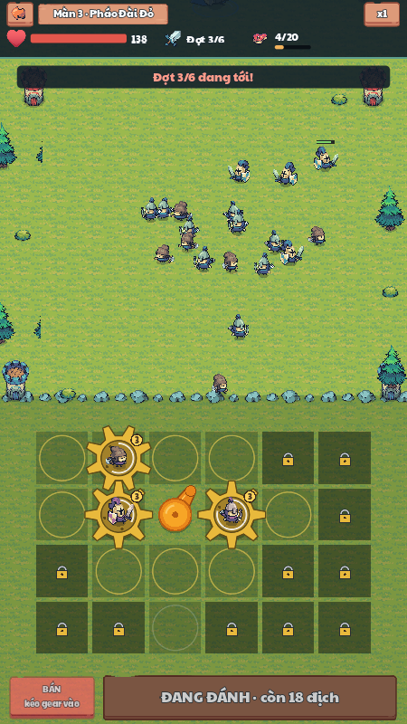
Mục lục
1Tổng quan
Bản Game Design chi tiết cho toàn bộ Gear Defenders, đối chiếu mã nguồn gốc 2bda420. Dữ liệu mặc định từ balance.json, 13 file lính và 15 file màn. Ảnh có sẵn trong dự án dùng để minh họa.
Gear Defenders là game thủ thành màn hình dọc. Người chơi không điều khiển lính. Họ xếp các bánh răng (gear) trên một bàn 6×4 ở dưới tường thành. Gear nào ăn khớp với quả cầu truyền động thì quay, và gear đang quay thì sinh lính. Lính tự chạy lên chiến trường đánh các đợt địch đang tiến về thành.
Bản này là bản làm lại theo ý tưởng của game di động Gear Defenders (iogame), dùng bộ hình Tiny Swords của Pixel Frog, giao diện tiếng Việt. Phần kiếm tiền (quảng cáo, gói nạp, VIP, battle pass) được bỏ. Đây là bản demo phục vụ học tập, không phát hành lên cửa hàng.
Ba trụ cột thiết kế
Mọi thứ trên bàn là cơ học thật: gear chạm nhau mới quay, quay ngược chiều nhau, chuỗi bị đứt thì dừng. Người chơi đọc được lý do vì sao lính không ra.
Hai gear giống nhau ghép thành một gear bậc cao hơn: mạnh hơn ×1,75 và sinh lính nhanh hơn. Mỗi lần ghép là một khoảnh khắc "ăn" rõ ràng.
Giữa các đợt là lượt nghỉ: chọn mua gì trong 5 món, đổi shop, để dành lấy lãi. Quyết định kinh tế ngắn, lặp lại, có hệ quả.
Điểm khác biệt (USP)
- Lưới truyền động thay cho ô đặt tháp. Vị trí của gear quan trọng vì nó quyết định gear có quay hay không, chứ không vì tầm bắn.
- Shop kiểu auto-chess trong game thủ thành. Thu nhập theo đợt, lãi khi để dành, tỉ lệ độ hiếm tăng theo đợt.
- Ô đặc biệt trên lưới (đá, vàng, rỉ sét, băng) biến mỗi màn thành một câu đố xếp gear khác nhau mà không cần hình mới.
Người chơi mục tiêu
- Người chơi di động 16–30 tuổi thích game chiến thuật nhẹ, chơi 3–5 phút mỗi trận.
- Đã quen merge game hoặc auto-chess, muốn thứ gì ngắn hơn TFT.
- Chơi một tay, màn hình dọc, lúc rảnh.
Game tham khảo
- Gear Defenders (bản gốc): bàn gear, ghép, thành, rương thẻ lính.
- Teamfight Tactics: shop 5 món, đổi shop, lãi tiết kiệm.
- Kingdom Rush: đợt địch có kiểu, tinh nhuệ, trùm cuối chương.
Phạm vi bản demo
| Có trong demo | Chưa làm (xem mục 16) |
|---|---|
| 15 màn (10 màn giai đoạn 1, 5 màn có ô đặc biệt), trùm ở màn 10 | Màn 16–50 mới ở mức kế hoạch |
| 13 lính (5 Thường, 4 Hiếm, 3 Sử thi, 1 Huyền thoại), 6 tướng | Chế độ vô tận, thử thách ngày, xếp hạng |
| Sảnh: Cửa hàng, Lính, Chiến đấu, Thành, Tướng; sự kiện triệu hồi; tuần tra | Kỹ năng chủ động của tướng, buff chọn giữa đợt, cộng hưởng lính |
| Quà 7 ngày, nhiệm vụ ngày, hồ sơ và khung ảnh | Tài khoản online, đồng bộ đám mây |
| Hướng dẫn người mới, âm thanh tổng hợp, admin chỉnh số | Nhạc nền, lồng tiếng, bản địa hoá tiếng Anh |
2Vòng lặp chơi
Hành vi pha nghỉ: dừng sinh quân và gọi địch mới, nhưng lính sống sót vẫn di chuyển, hồi phục và chạy hiệu ứng. Đợt cuối kết thúc thắng ngay, không trả thu nhập shop. Bán/ghép gear không xóa quân đã sinh; chúng giữ chỉ số cũ.
Mục tiêu nhịp: sau mỗi 1–2 trận người chơi có ít nhất một thứ để nâng cấp. Nút có việc để làm hiện chấm đỏ.
Một màn diễn ra thế nào
- Lượt nghỉ 1. Không có địch mới và không giới hạn chuẩn bị. Thịt đầu = min(kho, start_meat của màn + Kho dự trữ). Có 1 gear bậc 1 miễn phí của loại lính đầu tiên trong đội.
- Bấm SẴN SÀNG. Địch ra theo danh sách của đợt. Gear đang quay sinh lính theo nhịp. Lính tự chọn mục tiêu và đánh.
- Trong lúc đánh không mua được, nhưng vẫn kéo, ghép và bán gear để cứu tình huống.
- Hết đợt khi địch đã ra hết và bị giết hết. Lính còn sống được giữ lại và về điểm tập trung. Người chơi nhận thu nhập và lãi, shop làm mới.
- Lặp lại đến đợt cuối (4–8 đợt tuỳ màn). Thắng khi hạ hết đợt cuối, thua khi máu thành về 0.
- Kết thúc. Các hiệp sĩ nhảy mừng, bảng kết quả hiện số sao, vàng, thẻ lính, rương chiến thắng.
Điều khiển
| Thao tác | Kết quả |
|---|---|
| Chạm thẻ trong shop | Mua gear, gear bay xuống ô trống gần quả cầu truyền động nhất |
| Kéo gear sang ô trống | Di chuyển; kéo sang ô có gear khác thì đổi chỗ |
| Thả gear lên gear giống hệt (cùng lính, cùng bậc) | Ghép thành bậc +1 |
| Kéo gear vào ô BÁN (góc dưới trái) hoặc chuột phải | Bán, hoàn 75% giá trị |
| ĐỔI SHOP / KHOÁ | Làm mới 5 món (lần đầu mỗi lượt nghỉ miễn phí) / giữ 5 món sang lượt sau |
| SẴN SÀNG | Bắt đầu đợt tiếp theo |

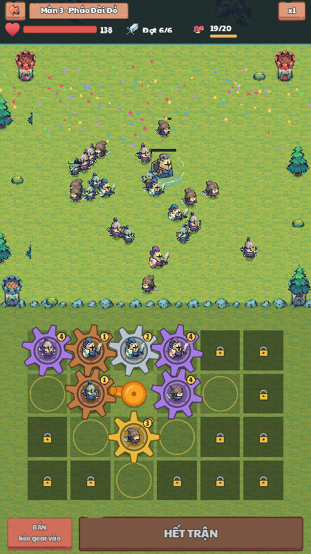
3Bàn bánh răng
Đây là cơ chế cốt lõi và là thứ làm game khác các game thủ thành khác.
Luật truyền động
- Bàn 6 cột × 4 hàng. Quả cầu truyền động chiếm ô (2,1) và không bao giờ dừng.
- Gear chỉ quay khi ăn khớp theo 4 hướng (trên, dưới, trái, phải) với một gear đang quay hoặc với quả cầu.
- Hai gear ăn khớp quay ngược chiều nhau, như bánh răng thật.
- Quả cầu có một chốt. Mỗi vòng (3 giây) chốt đẩy mỗi gear kề bên đi một răng, rồi cả chuỗi nghỉ. Kiểu truyền động Geneva này làm chuỗi gear chuyển động giật từng nấc, dễ nhìn.
- Chuỗi gear nối tới hai gear kề hai cạnh của trục nhận hai nhịp mỗi vòng, nên sản lượng trung bình gấp đôi chuỗi chỉ chạm một cạnh, trước giới hạn quân sống.
Ghép gear
- Thả một gear lên gear cùng lính, cùng bậc để ghép thành bậc +1. Bậc tối đa là 5.
- Màu áo lính đổi theo bậc để nhìn là biết: xanh ở bậc thấp, rồi tím, rồi vàng.
- Shop gắn nhãn GHÉP ĐƯỢC lên món có gear giống trên bàn.
- Đội hình nhỏ thì dễ ra gear trùng để ghép hơn. Đội đa dạng thì linh hoạt hơn. Đây là đánh đổi chiến thuật chính ngoài sảnh.
Ô mở theo cấp thành
Số ô mở theo cấp thành 1–10: 12, 14, 16, 18, 20, 22, 23, 23, 23, 23. Ô mở theo vòng từ quả cầu ra ngoài để ô nào đã mở cũng nối được vào chuỗi.
Ô đặc biệt (từ màn 11)
| Ô | Luật | Vai trò thiết kế | Màn |
|---|---|---|---|
| Ô đá | Không đặt gear được | Chặn một mặt của quả cầu, buộc nối chuỗi đi vòng | 11, 12, 13, 15 |
| Ô vàng | Gear trên ô sinh lính nhanh hơn 50% | Thưởng cho việc kéo chuỗi ra xa quả cầu | 13, 14 |
| Ô rỉ sét | Gear vẫn quay và truyền động, nhưng không sinh lính | Buộc dùng một gear rẻ làm cầu nối | 14 |
| Ô băng | Gear trơn: không ăn khớp gear nào, chỉ quay khi chạm thẳng quả cầu | Cắt chuỗi, ô cạnh quả cầu thành ngõ cụt | 15 |
Lần đầu gặp một loại ô, game hiện bảng "Ô MỚI TRÊN LƯỚI!" có hình mẫu và luật, các ô đó nhấp nháy trên bàn. Bảng hướng dẫn không khóa thao tác hoặc đóng băng mô phỏng.
4Trận đấu và chiến trường
Bố cục màn hình trận (720×1280)
- Trên cùng: nút về, tên màn, tốc độ x1/x2; máu thành, đợt hiện tại, thịt.
- Chiến trường (y 110 → 700): địch xuất hiện ở mép trên và tiến xuống. Lính ta tập trung ở y 470.
- Tường thành ở y 700. Địch chạm tường thì đánh vào thành.
- Bàn gear ở dưới tường. Góc dưới trái là ô BÁN, dưới cùng là nút SẴN SÀNG.
Lính tự đánh
- Lính ta sinh ra ở gear, chạy lên điểm tập trung rồi tìm địch gần nhất.
- Lính giữ khoảng cách với đồng đội để không chồng lên nhau và không giật hình khi đứng yên.
- Giới hạn sinh từ gear là 60 lính ta trên sân. Tướng dùng luồng riêng nên có thể vượt giới hạn thêm một đơn vị; mỗi gear còn có trần quân sống riêng.
- Tướng xuất hiện ở giữa tường thành và đánh như một lính lớn. Tướng ngã thì quay lại ở đợt sau.
Tốc chạy và chí mạng
Tốc chạy
- Mỗi lính có tốc chạy riêng, từ 48 (Hiệp sĩ khiên) đến 115 (Sát thủ).
- Lính nhanh tới địch trước và nhận đòn đầu. Kỵ thương và Sát thủ vì thế hợp để mở giao tranh, còn lính chậm nhưng trâu giữ tuyến.
- Popup lính ghi tốc chạy kèm chữ: chậm (dưới 52), vừa (52–69), nhanh (70–99), rất nhanh (100 trở lên).
- Cấp, sao và bậc gear không đổi tốc chạy.
Chí mạng
- Mỗi đòn đánh có một tỉ lệ thành chí mạng, gây sát thương nhân với hệ số chí mạng của lính.
- Áp dụng cho đòn thường cận chiến, tên và bom phe ta. Hồi máu, cháy và kỹ năng không tự bốc chí mạng; địch đánh thành không chí mạng. Cháy tính từ sát thương tên nên vẫn kế thừa hệ số của tên chí mạng.
- Chí mạng cộng dồn với nhát đầu ×2,5 của Sát thủ, nên đòn mở màn của Sát thủ có thể gây ×5.
- Chỉ lính ta có chí mạng. Bản thử cho cả địch chí mạng làm bot tụt từ 4/4 xuống 0–3/4 ở màn 5–10, nên chí mạng được giữ làm lợi thế của người chơi; độ khó được điều chỉnh qua hệ số chỉ số, loại lính, số lượng, tinh nhuệ và nhịp sinh.
- Đòn chí mạng hiện chữ vàng "CHÍ MẠNG!" bay lên tại chỗ trúng, giới hạn khoảng 11 lần mỗi giây để trận đông không rối mắt.
Sức mạnh thực của từng địch
enemy_power là hệ số nhân chỉ số, chưa phải sức mạnh của một đơn vị hay sức ép của cả màn. Cần lấy HP, sát thương/đòn và hồi chiêu của đúng loại lính, áp hệ số đợt và tinh nhuệ, rồi mới tổng hợp theo số lượng và lịch sinh.
Địch không chí mạng. Với cùng loại lính, C tăng theo m²; tinh nhuệ có C gấp 5 × 1,8 = 9 lần địch thường cùng loại trong cùng đợt. Đợt cuối của màn 8 đợt có HP và sát thương ×2,4 so với đợt đầu, nên C ×5,76 trước khác biệt đội hình.
Tu sĩ và Đầu bếp có DPS đánh bằng 0 nhưng tạo sức ép hỗ trợ. Không dùng trường damage của Tu sĩ như sát thương gây ra. Xem cách tính sức ép đợt/màn, bảng sức mạnh và nhịp dồn quân bên dưới.
Thắng, thua, sao
| Kết quả | Điều kiện |
|---|---|
| Thắng | Hạ hết địch của đợt cuối |
| Thua | Máu thành về 0 |
| ★ | Thắng |
| ★★ | Thắng, thành còn ít nhất 45% máu |
| ★★★ | Thắng, thành còn ít nhất 80% máu |
FSức mạnh địch → sức ép đợt → sức ép màn
Đánh giá màn bằng hai lớp: tải chiến đấu tổng cho biết phải xử lý bao nhiêu sức mạnh, còn đỉnh tải nhập theo thời gian cho biết sức mạnh ấy dồn tới nhanh đến mức nào. Hai màn có cùng enemy_power vẫn khác nhau nếu một màn dùng Nông dân còn màn kia dùng Hiệp sĩ khiên, tướng quân hoặc đội hỗ trợ.
Định nghĩa của GDD: C = HP × DPS là chỉ số sức mạnh đánh trực tiếp để so sánh. Đây là phép phân tích dữ liệu, không phải công thức mà engine dùng để quyết định thắng/thua. Các chỉ số sức ép dưới đây là ước lượng cơ sở; kỹ năng, tầm đánh, tốc chạy, vị trí và quân người chơi còn quyết định kết quả thực tế.
1. Sức mạnh cơ sở của 13 loại địch
Bảng ở m = 1, địch thường, không chí mạng. Khi tính từng màn, HP và sát thương phải nhân m của đúng đợt. HPS là lượng hồi máu/giây lý thuyết khi liên tục có mục tiêu cần hồi.
| Địch | Vai trò | HP | Đánh / đòn | Hồi chiêu | DPS đánh | C = HP × DPS | Hỗ trợ / kỹ năng |
|---|---|---|---|---|---|---|---|
| Nông dân | Cận chiến | 30 | 5 | 0,9s | 5,56 | 166,67 | Không có kỹ năng đặc biệt |
| Chiến binh | Cận chiến | 85 | 8 | 1s | 8 | 680 | Không có kỹ năng đặc biệt |
| Cung thủ | Bắn xa | 28 | 9 | 1,3s | 6,92 | 193,85 | Không có kỹ năng đặc biệt |
| Thợ mỏ | Cận chiến | 60 | 6 | 1s | 6 | 360 | Đào hầm: chịu ít hơn 50% sát thương từ tên và bom. |
| Thợ rèn | Cận chiến | 45 | 6 | 1,1s | 5,45 | 245,45 | Rèn giáp: 5 giây một lần, đồng đội trong bán kính 110 chịu ít hơn 25% sát thương trong 3 giây. |
| Kỵ thương | Cận chiến | 55 | 14 | 1,1s | 12,73 | 700 | Không có kỹ năng đặc biệt |
| Sát thủ | Cận chiến | 38 | 11 | 0,7s | 15,71 | 597,14 | Ám sát: ưu tiên địch bắn xa và hồi máu ở bất cứ đâu; nhát đầu gây x2.5 sát thương. |
| Hiệp sĩ khiên | Cận chiến | 130 | 6 | 1,2s | 5 | 650 | Giơ khiên: 4 giây một lần, miễn nhiễm mọi sát thương trong 1.2 giây. |
| Cung lửa | Bắn xa | 30 | 7 | 1,4s | 5 | 150 | Tên lửa: mục tiêu bị đốt 4 sát thương/giây trong 3 giây. |
| Tu sĩ | Hồi máu | 36 | — | 1,8s | 0 | 0 | 5,56 HPS |
| Đầu bếp | Hỗ trợ | 40 | — | 1s | 0 | 0 | 10% HP đồng đội / 6s, trong bán kính 150 |
| Pháo thủ | Bắn xa | 34 | 12 | 2,4s | 5 | 170 | Bom: nổ trúng mọi địch trong bán kính 70. |
| Tướng quân | Cận chiến | 260 | 20 | 1s | 20 | 5.200 | Hiệu lệnh: đồng đội trong bán kính 160 gây thêm 30% sát thương. Mỗi nhát chém trúng mọi địch sát mục tiêu; 5 giây một lần xoay kiếm gây x1.5 sát thương quanh mình. |
2. Tổng hợp sức ép
HP thành có thể dùng máu cơ sở để so sánh dữ liệu màn, hoặc máu thực = HP cơ sở × hệ số cấp thành × (1 + buff máu thành tướng/100) khi kiểm tra một hồ sơ. Bảng bên dưới dùng HP cơ sở của từng màn; chuẩn hóa màn 1 = 100 điểm. Tổng C cộng theo từng đơn vị, không lấy tổng HP × tổng DPS vì cách đó tạo các tích chéo không có trong định nghĩa.
3. Nhịp dồn quân
Mặc định Δ = 10 giây. Cửa sổ trượt tính theo thời điểm sinh thật, gồm các nhóm chồng nhau. Một nhóm 10 quân không có cùng nhịp ép khi giãn 0,5s và khi giãn 3s, dù tổng C bằng nhau. Đỉnh tải nhập này chưa phải số quân/DPS đang sống trên sân: lính còn tồn tại bao lâu phụ thuộc giao tranh.
4. Ví dụ màn 1
| Đợt | Tổng HP | DPS đánh cộng theo danh sách | Tổng C | P_đợt (100 HP thành) | P_dồn_10s |
|---|---|---|---|---|---|
| 1 | 135 | 25 | 675 | 6,75 | 0,68 |
| 4 | 1.690,56 | 172,24 | 23.711,35 | 237,11 | 23,37 |
Đợt 1: mỗi Nông dân có HP 27, sát thương 4,5, DPS 4,5/0,9 = 5; C = 135. Năm Nông dân tạo C_đợt = 675, P_đợt = 6,75. Đợt 4 dùng hỗn hợp 17 địch, gồm một Chiến binh tinh nhuệ: tổng C = 23.711,35. Một Chiến binh thường tại m = 1,44 có HP 122,4 và DPS 11,52, C = 1.410,048; bản tinh nhuệ có HP 612 và DPS 20,736, C = 12.690,432.
5. Bảng sức ép cả 15 màn
Tải và đỉnh đều tính từ các file .tres hiện tại. Hai cột điểm chuẩn hóa dùng màn 1 = 100. Điểm cao hơn thể hiện dữ liệu địch nặng hơn theo phép đo này, không suy ra độ khó hay số lần nâng cấp cần thiết theo cùng tỷ lệ.
| Màn | Tổng HP | Tổng C đánh | P_màn (HP cơ sở) | Sức ép tổng (M1=100) | Đỉnh dồn 10s (M1=100) | Quân hỗ trợ |
|---|---|---|---|---|---|---|
| Màn 1 · Đồng Cỏ | 2.889 | 33.438,98 | 334,39 | 100 | 100 | 0 |
| Màn 2 · Đồi Đá | 7.159,6 | 152.353,47 | 1.523,53 | 455,62 | 343,95 | 0 |
| Màn 3 · Pháo Đài Đỏ | 12.446,7 | 320.944,75 | 2.674,54 | 799,83 | 483,27 | 9 |
| Màn 4 · Rừng Thông | 16.170,52 | 453.846,39 | 3.782,05 | 1.131,03 | 700,24 | 3 |
| Màn 5 · Hẻm Núi | 20.082,92 | 703.515,89 | 5.862,63 | 1.753,23 | 964,64 | 4 |
| Màn 6 · Làng Bỏ Hoang | 30.740,42 | 1.145.482,38 | 8.811,4 | 2.635,07 | 1.172,2 | 4 |
| Màn 7 · Đầm Lầy | 35.276,5 | 1.545.273,86 | 11.886,72 | 3.554,75 | 2.087,8 | 4 |
| Màn 8 · Thành Đá Đen | 34.779,84 | 1.506.881,13 | 10.763,44 | 3.218,83 | 1.797,08 | 4 |
| Màn 9 · Cổng Pháo Đài | 46.277,4 | 2.258.888,9 | 16.134,92 | 4.825,18 | 2.708,97 | 11 |
| Màn 10 · Vua Đỏ | 57.590,46 | 3.007.955,24 | 20.053,03 | 5.996,9 | 4.063,03 | 9 |
| Màn 11 · Bến Cảng | 59.827 | 3.200.988,32 | 21.339,92 | 6.381,75 | 4.015,71 | 6 |
| Màn 12 · Rừng Sương | 88.207,4 | 3.543.133,78 | 23.620,89 | 7.063,88 | 4.318,2 | 6 |
| Màn 13 · Đồi Cừu | 70.871,76 | 5.263.906,21 | 33.960,69 | 10.156,02 | 6.380,83 | 8 |
| Màn 14 · Mỏ Vàng | 70.570,84 | 5.153.493,37 | 33.248,34 | 9.942,99 | 4.953,31 | 6 |
| Màn 15 · Cầu Đá | 118.428,64 | 8.615.160,87 | 53.844,76 | 16.102,39 | 10.221,88 | 10 |
Biểu đồ sức ép tổng · chiều dài cột dùng thang tuyến tính.
6. Hỗ trợ và khắc chế phải đọc cùng chỉ số
- Tu sĩ: DPS đánh = 0; HPS = lượng hồi thực/hồi chiêu. HPS cộng theo danh sách chỉ là công suất lý thuyết, không giả định tất cả Tu sĩ sống, ở đúng tầm và luôn có người bị thương.
- Đầu bếp địch: mỗi 6 giây hồi 10% HP tối đa cho quân xung quanh. Tác dụng phụ thuộc số đồng đội gần, lượng HP đã mất và vị trí; không có một C hỗ trợ cố định chính xác.
- Chống chịu: khiên, rèn giáp và giảm sát thương tên thay đổi HP hiệu dụng theo loại sát thương và thời gian hoạt động.
- Sát thương: cháy, bom nhiều mục tiêu, nhát đầu Sát thủ, chém lan và hào quang Tướng quân làm hiệu quả vượt DPS đòn thường. Không tự gán hệ số kỹ năng tùy ý vào bảng.
- Sức phòng thủ người chơi: đội, cấp/sao, bậc gear, quân sống, liên kết trục, ô đặc biệt và thu nhập thay đổi khả năng xử lý áp lực. Muốn kết luận độ khó thực phải dùng cùng hồ sơ và mô phỏng/playtest.
7. Tính thử sức ép màn
Có thể thay hệ số chỉ số, cấp thành và tốc độ lịch sinh để thấy điều gì đổi. Tốc độ lịch ×2 chia đôi start/interval của tất cả nhóm; không đổi tốc chạy hay hồi chiêu của lính. Khi chọn “Cả màn”, chỉ số dồn lấy đỉnh lớn nhất của một đợt, không nối các đợt qua pha nghỉ.
Nguồn chỉ số/luật: TroopData.gd, Battle.gd, Unit.gd, WaveDirector.gd, balance.json, levels/*.tres. C = HP×DPS tiếp nối cách so sánh lính trong Admin, nhưng bỏ chí mạng cho phe địch và tách hồi máu. Chỉ số báo cáo cũ “số quân × enemy_power / HP thành” không được dùng cho bảng này.
5Kinh tế trong trận
Tiền trong trận là thịt. Thịt không tự hồi theo thời gian; nó đến theo đợt, nên mỗi lượt nghỉ là một lần quyết định chi tiêu.
| Nguồn thịt | Giá trị | Ghi chú |
|---|---|---|
| Thịt đầu trận | start_meat của màn + cấp Kho dự trữ, giới hạn bởi kho | Màn 1: 6; màn 10: 15; màn 11–15: 15/15/16/16/17 |
| Thu nhập mỗi đợt | 5 + số đợt vừa xong + cấp Lò thịt + buff thu nhập tướng | Hết đợt 1: +6, hết đợt 2: +7… |
| Lãi | +1 cho mỗi 5 thịt đang giữ, tối đa +3 | Tính trước khi cộng thu nhập |
| Giết địch | 0,35 mỗi địch · 3 mỗi tinh nhuệ | |
| Bán gear | max(1, floor(giá bậc 1 × 2^(bậc−1) × 0,75)) | Chặn mua bán lòng vòng |
| Đầu bếp (lính) | +1 mỗi 6 giây khi còn sống | Chỉ trong lúc đánh |
| Trần thịt | 20 → 30 theo cấp thành | Chặn tích trữ quá nhiều |
Shop giữa đợt
- 5 ô chọn độc lập lính trong đội hình, có thể trùng. Chủ yếu bậc 1; từ đợt 5 có cơ hội bậc 2.
- Giá: Thường 2 · Hiếm 3 · Sử thi 4 · Huyền thoại 6 thịt.
- Đổi shop 1 thịt, lần đầu mỗi lượt nghỉ miễn phí. KHOÁ giữ nguyên cả ô đã mua qua đúng một lượt nghỉ rồi tự mở; đổi shop cũng bỏ khóa.
- Từ đợt 5, mỗi ô có 15% ra gear bậc 2, giá round(bậc 1 ×2,5): 5 / 8 / 10 / 15 thịt theo bốn độ hiếm.
- Không có thời gian đếm ngược ở lượt nghỉ.
Tỉ lệ độ hiếm trong shop
| Từ đợt | Thường | Hiếm | Sử thi | Huyền thoại |
|---|---|---|---|---|
| 1 | 80% | 20% | 0% | 0% |
| 3 | 60% | 32% | 8% | 0% |
| 5 | 45% | 35% | 16% | 4% |
| 7 | 35% | 35% | 22% | 8% |
Trọng số chuẩn hóa trên các độ hiếm có trong đội. Nếu tổng bằng 0, chọn ngẫu nhiên độ hiếm đội có. Trong cùng độ hiếm, chọn lính theo summon_weight.
Ví dụ: cuối đợt 3 đang giữ 12 thịt. Lãi = min(12 ÷ 5, 3) = +2, thu nhập = 5 + 3 = +8. Tổng lý thuyết 22. Kho thành cấp 1 chỉ chứa 20 nên còn 20, mất 2 vượt trần; phải có kho ít nhất 22 mới giữ đủ. Để dành thì ăn lãi nhưng đợt sau yếu hơn: đó là lựa chọn kinh tế người chơi phải làm mỗi lượt.
6Lính
13 lính, 4 độ hiếm. Bộ hình Tiny Swords miễn phí chỉ có 5 loại người, nên lính mới được làm bằng cách đổi đồ cầm tay (cuốc, búa, dao, thịt, túi bom), đổi đòn đánh, và thêm hiệu ứng vẽ bằng code. Chỉ số dưới đây là ở cấp 1, 1 sao, gear bậc 1. Tốc chạy tính bằng điểm ảnh mỗi giây, tầm đánh bằng điểm ảnh, hồi chiêu và giây/lính bằng giây; chí mạng ghi theo dạng "tỉ lệ × hệ số sát thương". Cách hình dung các đơn vị này nằm ở mục Hiểu các con số ngay dưới bảng.
| Lính | Độ hiếm | Vai trò | Máu | Sát thương | Hồi chiêu | Tầm | Giây/lính | Tốc chạy | Chí mạng | Kỹ năng |
|---|---|---|---|---|---|---|---|---|---|---|
| Nông dân | Thường | Cận chiến | 30 | 5 | 0,9 | 34 | 2,6 | 78 | 5% ×1,5 | Rẻ, đông, yếu |
| Chiến binh | Thường | Cận chiến | 85 | 8 | 1,0 | 38 | 4,5 | 55 | 5% ×1,5 | Giữ tuyến |
| Cung thủ | Thường | Bắn xa | 28 | 9 | 1,3 | 230 | 4,5 | 55 | 12% ×1,6 | Bắn từ phía sau |
| Thợ mỏ | Thường | Cận chiến | 60 | 6 | 1,0 | 34 | 3,6 | 60 | 5% ×1,5 | Đào hầm: chịu ít hơn 50% sát thương từ tên và bom |
| Thợ rèn | Thường | Cận chiến | 45 | 6 | 1,1 | 34 | 3,8 | 62 | 5% ×1,5 | Rèn giáp: 5 giây một lần, đồng đội trong bán kính 110 chịu ít hơn 25% sát thương trong 3 giây |
| Kỵ thương | Hiếm | Cận chiến | 55 | 14 | 1,1 | 52 | 5,0 | 95 | 15% ×1,75 | Nhanh, đánh đau |
| Sát thủ | Hiếm | Cận chiến | 38 | 11 | 0,7 | 32 | 4,8 | 115 | 25% ×2 | Ám sát: săn địch bắn xa và hồi máu; nhát đầu ×2,5 |
| Hiệp sĩ khiên | Hiếm | Cận chiến | 130 | 6 | 1,2 | 38 | 5,5 | 48 | 3% ×1,5 | Giơ khiên: 4 giây một lần, miễn mọi sát thương trong 1,2 giây |
| Cung lửa | Hiếm | Bắn xa | 30 | 7 | 1,4 | 230 | 5,0 | 55 | 10% ×1,5 | Tên lửa: đốt 4 sát thương/giây trong 3 giây |
| Tu sĩ | Sử thi | Hồi máu | 36 | 10 | 1,8 | 170 | 6,0 | 58 | — | Hồi đồng đội có tỷ lệ HP thấp nhất dưới 95% trong phạm vi nhận biết |
| Đầu bếp | Sử thi | Hỗ trợ | 40 | 0 | — | — | 7,0 | 55 | — | Nấu thịt: +1 thịt mỗi 6 giây. Ở phe địch: hồi máu quân xung quanh |
| Pháo thủ | Sử thi | Bắn xa | 34 | 12 | 2,4 | 210 | 6,0 | 50 | 8% ×1,5 | Bom: nổ trúng mọi địch trong bán kính 70 |
| Tướng quân | Huyền thoại | Cận chiến | 260 | 20 | 1,0 | 46 | 10,0 | 62 | 15% ×2 | Hiệu lệnh +30% sát thương cho đồng đội bán kính 160; chém lan; xoay kiếm ×1,5 mỗi 5 giây |
Hiểu các con số: đơn vị và cách hình dung
Các chỉ số trong bảng trên là số trong file dữ liệu của engine. Phần này quy chúng ra thứ nhìn thấy được trên màn hình, để người thiết kế không cần mở engine vẫn hình dung được lính chạy nhanh cỡ nào, đánh dày cỡ nào, tầm với tới đâu.
Quy ước chung
- Khoảng cách tính bằng điểm ảnh (px) của màn hình game 720 × 1280. Trên máy thật, màn hình được co giãn cho vừa, nên nên nghĩ theo tỉ lệ: 720 px là hết chiều ngang màn hình.
- Mốc dễ nhớ: 1 ô gear = 100 px. Bàn gear rộng 6 ô = 600 px, gần hết chiều ngang. Trên điện thoại màn hình ngang khoảng 7 cm, nên 100 px ≈ 1 cm.
- Thời gian tính bằng giây thật ở tốc độ x1. Nút x2 trong trận làm mọi thứ nhanh gấp đôi, nhưng các con số vẫn ghi theo x1.
- Máu và sát thương là điểm, không có đơn vị ngoài game. Chỉ có ý nghĩa khi so với nhau: một đòn trừ đúng số máu bằng sát thương.
- Cấp, sao, bậc gear và sức mạnh màn chỉ nhân máu và sát thương. Tốc chạy, hồi chiêu, tầm đánh, chí mạng thì không đổi.
| Chỉ số | Đơn vị | Hình dung |
|---|---|---|
| Tốc chạy | px mỗi giây | 55 = đi hơn nửa ô gear mỗi giây, mất 13 giây từ mép trên sân tới tường |
| Hồi chiêu | giây giữa 2 đòn | 1,0 = mỗi giây một đòn, 60 đòn/phút |
| Tầm đánh | px, tính từ tâm lính | 34 = phải đứng sát; 230 = gần 2,5 ô gear, một phần ba chiều ngang màn hình |
| Tầm phát hiện | px | Địch trong vòng này thì lính bỏ đường, quay sang đánh |
| Giây/lính | giây | Gear bậc 1 thuộc chuỗi chạm trục ở một cạnh ra 1 lính sau thời gian cơ sở; chuỗi chạm hai cạnh có sản lượng gấp đôi |
| Tối đa mỗi gear | lính | Gear đủ số lính còn sống thì ngừng sinh tới khi có lính chết |
| Bán kính kỹ năng | px | Bom 70 = vòng rộng 1,4 ô gear, trùm cả một cụm lính đứng dồn |
| Chí mạng | % và hệ số | 15% ×2 = khoảng 1 đòn trong 7 đòn gây gấp đôi |
| Máu, sát thương | điểm | Chiến binh 85 máu chịu 17 đòn Nông dân (5), mất khoảng 15 giây |
Tốc chạy đổi ra thời gian
| Lính | Tốc chạy (px/giây) | Đi 1 ô gear | Gear → điểm tập trung | Mép trên sân → tường | Trên điện thoại |
|---|---|---|---|---|---|
| Hiệp sĩ khiên | 48 | 2,1 giây | 10,2 giây | 15,2 giây | 0,5 cm/giây |
| Pháo thủ | 50 | 2,0 giây | 9,8 giây | 14,6 giây | 0,5 cm/giây |
| Chiến binh, Cung thủ, Cung lửa, Đầu bếp | 55 | 1,8 giây | 8,9 giây | 13,3 giây | 0,6 cm/giây |
| Tu sĩ | 58 | 1,7 giây | 8,4 giây | 12,6 giây | 0,6 cm/giây |
| Thợ mỏ | 60 | 1,7 giây | 8,2 giây | 12,2 giây | 0,6 cm/giây |
| Thợ rèn, Tướng quân | 62 | 1,6 giây | 7,9 giây | 11,8 giây | 0,6 cm/giây |
| Nông dân | 78 | 1,3 giây | 6,3 giây | 9,4 giây | 0,8 cm/giây |
| Kỵ thương | 95 | 1,1 giây | 5,2 giây | 7,7 giây | 0,9 cm/giây |
| Sát thủ | 115 | 0,9 giây | 4,3 giây | 6,3 giây | 1,1 cm/giây |
Cột cuối lấy 100 px ≈ 1 cm trên màn hình điện thoại rộng khoảng 7 cm. Địch cùng loại chạy cùng tốc độ.
Hồi chiêu đổi ra nhịp đánh
| Lính | Hồi chiêu | Đòn mỗi phút |
|---|---|---|
| Sát thủ | 0,7 giây | 86 |
| Nông dân | 0,9 giây | 67 |
| Chiến binh, Thợ mỏ, Tướng quân | 1,0 giây | 60 |
| Kỵ thương, Thợ rèn | 1,1 giây | 55 |
| Hiệp sĩ khiên | 1,2 giây | 50 |
| Cung thủ | 1,3 giây | 46 |
| Cung lửa | 1,4 giây | 43 |
| Tu sĩ (hồi máu) | 1,8 giây | 33 |
| Pháo thủ | 2,4 giây | 25 |
Một đòn diễn ra thế nào
- Lính tới trong tầm đánh thì bắt đầu động tác đánh.
- Sát thương trúng ở khoảng giữa động tác (55% thời lượng hoạt ảnh). Với cung và bom, lúc đó mũi tên hoặc quả bom mới bay đi: tên bay 560 px/giây, bom 300 px/giây theo đường vòng cung.
- Hồi chiêu tính từ lúc bắt đầu động tác. Hết hồi chiêu mới đánh đòn sau.
Sát thương mỗi giây (DPS) = sát thương ÷ hồi chiêu × hệ số chí mạng trung bình. Ví dụ Kỵ thương: 14 ÷ 1,1 × 1,11 ≈ 14,1.
Thước tầm đánh (đúng tỉ lệ)
Mẹo cho người thiết kế: tăng tốc chạy làm lính tới giao tranh sớm hơn và chịu đòn trước, không phải lúc nào cũng tốt. Muốn lính đánh nhiều hơn thì giảm hồi chiêu. Muốn lính đứng xa an toàn hơn thì tăng tầm đánh. Muốn lính đông hơn thì giảm giây/lính.
Cách có lính
- Có sẵn: Nông dân, Chiến binh, Cung thủ.
- Quà qua màn lần đầu: màn 1 Kỵ thương, 2 Tu sĩ, 3 Thợ mỏ, 5 Hiệp sĩ khiên, 7 Cung lửa, 12 Thợ rèn, 15 Sát thủ.
- Thẻ lính từ rương. Thẻ đầu tiên của lính chưa có sẽ mở khoá luôn (hiện "MỚI!").
- Tỉ lệ độ hiếm của thẻ: 64% · 32% · 3,6% · 0,4%.
Đội hình
- Chỉ lính trong đội mới xuất hiện trong shop trận.
- Số ô đội theo cấp thành: 3 ô (cấp 1), 4 ô (cấp 3), 5 ô (cấp 6).
- Tab Lính: đội hình cố định ở trên, bộ sưu tập cuộn ở dưới. Kéo thẻ thả vào ô đội để thay lính.
- Phải có ít nhất 1 lính trong đội mới vào trận được.
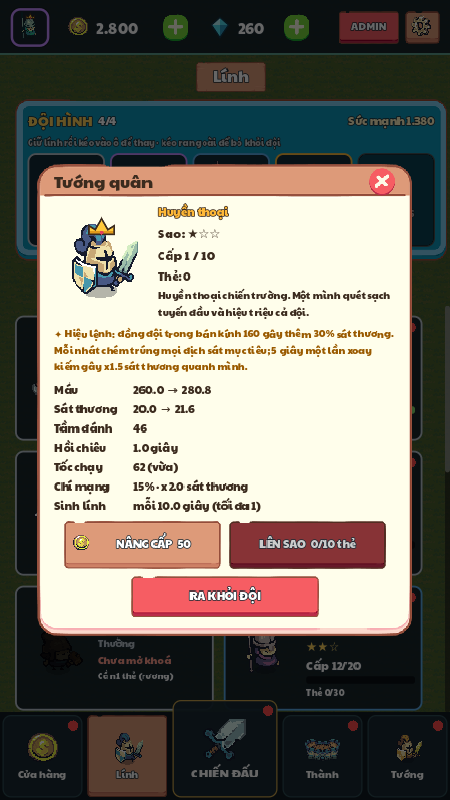
Nâng cấp lính
| Lên cấp | 1→2 | 2→3 | 3→4 | 4→5 | 5→6 | 6→7 | 7→8 | 8→9 | 9→10 |
|---|---|---|---|---|---|---|---|---|---|
| Vàng | 50 | 68 | 91 | 123 | 166 | 224 | 303 | 409 | 552 |
7Tướng
Người chơi chọn 1 tướng dẫn đội. Tướng cho cả đội một buff suốt trận và ra trận đánh như một lính lớn. Tướng dùng lại hình lính có sẵn, đổi màu giáp bằng shader, to gấp 1,5 lần, có áo choàng màu riêng bay khi chạy, vòng hào quang theo độ hiếm và thanh máu vàng. Tướng Huyền thoại đội vương miện.
| Tướng | Độ hiếm | Đánh như | Buff ở cấp 1, 1 sao |
|---|---|---|---|
| Hiệp Sĩ Bạch Kim | Huyền thoại | Chiến binh | +20% máu cho mọi lính |
| Thương Thần Bão Tố | Huyền thoại | Kỵ thương | +18% sát thương cho mọi lính |
| Xạ Thủ Hoả Ngục | Sử thi | Cung lửa | +12% tốc độ sinh lính |
| Hiền Giả Lục Diệp | Sử thi | Tu sĩ | +2 thịt thu nhập mỗi đợt |
| Đội Trưởng Thép (có sẵn) | Hiếm | Hiệp sĩ khiên | +15% máu thành |
| Sát Thủ Bóng Đêm | Hiếm | Sát thủ | +8% sát thương cho mọi lính |
Sự kiện Triệu hồi Tướng quân
| Kết quả mỗi lượt | Tỉ lệ |
|---|---|
| Tướng nổi bật | 1,5% |
| Tướng Huyền thoại khác | 1% |
| Tướng Sử thi | 6% |
| Tướng Hiếm | 15% |
| 5 mảnh tướng nổi bật | 8% |
| 3 mảnh tướng ngẫu nhiên | 20% |
| 250 vàng | 48,5% |
- Tướng nổi bật đổi mỗi tuần, xoay vòng: Thương Thần → Xạ Thủ → Hiệp Sĩ → Hiền Giả. Có đồng hồ đếm ngược.
- Giá: 30 kim cương 1 lượt, 270 cho 10 lượt. 1 lượt miễn phí mỗi ngày.
- Bảo hiểm: Lượt thứ 50 liên tiếp chưa ra tướng nổi bật chắc chắn ra. Nhận tướng nổi bật đặt bộ đếm về 0. Gói 10 lượt luôn có ít nhất 1 tướng.
- Hoạt ảnh: vòng triệu hồi, tia sáng theo màu độ hiếm, lật thẻ, chữ lớn khi ra Huyền thoại.
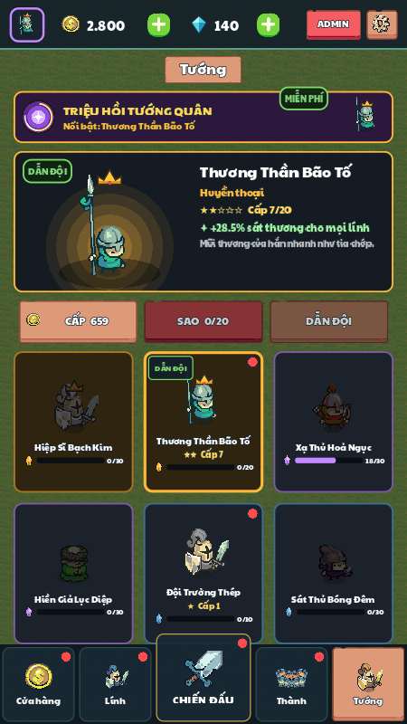
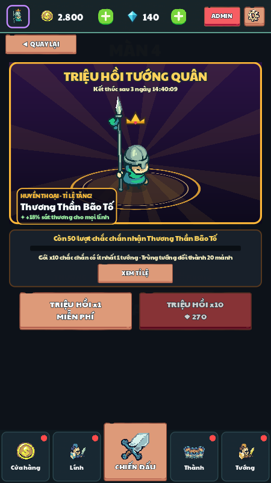
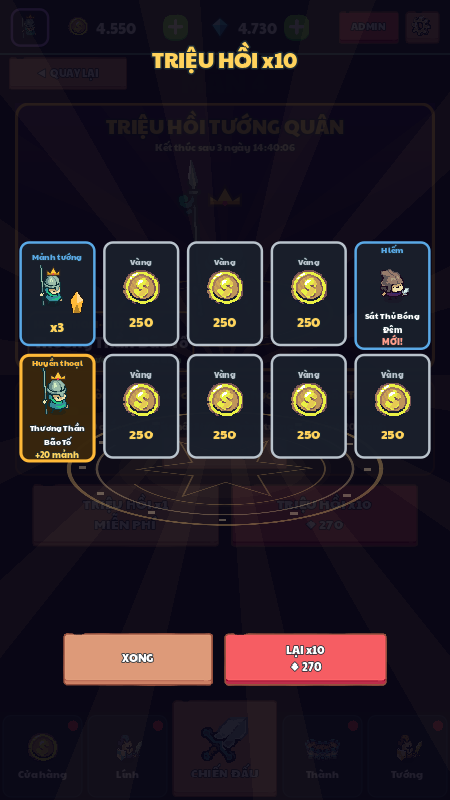
8Màn chơi và địch
Địch dùng chính 13 loại lính (áo đỏ/đen), có đủ kỹ năng như lính ta. Mỗi màn là một danh sách đợt; mỗi đợt gồm các nhóm lính, có thể có tinh nhuệ. Tướng quân địch là trùm màn 10.
| # | Màn | Đợt | Địch | Tinh nhuệ | Hệ số chỉ số | Máu thành | Thịt đầu | Điểm nhấn thiết kế | Quà lần đầu |
|---|---|---|---|---|---|---|---|---|---|
| 1 | Đồng Cỏ | 4 | 41 | 1 | 0,9 | 100 | 6 | Mua gear, đặt cạnh cầu truyền động | Kỵ thương |
| 2 | Đồi Đá | 5 | 65 | 1 | 1,4 | 100 | 7 | Ghép 2 gear lên bậc 2; Kỵ thương địch | Tu sĩ |
| 3 | Pháo Đài Đỏ | 6 | 89 | 3 | 1,5 | 120 | 8 | Nối chuỗi qua gear khác; Tu sĩ địch | Thợ mỏ |
| 4 | Rừng Thông | 6 | 97 | 1 | 1,9 | 120 | 9 | Để dành thịt ăn lãi | |
| 5 | Hẻm Núi | 6 | 102 | 2 | 2,2 | 120 | 10 | Thợ mỏ địch chịu tên: cần cận chiến | Hiệp sĩ khiên |
| 6 | Làng Bỏ Hoang | 7 | 138 | 2 | 2,3 | 130 | 11 | Cung lửa địch; khoá shop giữ gear hiếm | |
| 7 | Đầm Lầy | 7 | 136 | 3 | 2,5 | 130 | 12 | Sát thủ địch săn lính bắn xa | Cung lửa |
| 8 | Thành Đá Đen | 7 | 147 | 3 | 2,4 | 140 | 13 | Đầu bếp, Thợ rèn, Pháo thủ địch | |
| 9 | Cổng Pháo Đài | 8 | 171 | 4 | 2,6 | 140 | 14 | Tổng hợp: 8 đợt, cần gear bậc 3 | |
| 10 | Vua Đỏ | 8 | 198 | 4 | 2,7 | 150 | 15 | Trùm: Tướng quân địch | |
| 11 | Bến Cảng | 8 | 191 | 3 | 2,9 | 150 | 15 | 2 ô đá cạnh cầu; màn "thở" sau trùm | |
| 12 | Rừng Sương | 8 | 158 | 2 | 3,1 | 150 | 15 | 3 ô đá; Hiệp sĩ khiên số đông | Thợ rèn |
| 13 | Đồi Cừu | 8 | 183 | 3 | 3,6 | 155 | 16 | 3 ô vàng + 1 ô đá; Sát thủ săn hậu tuyến | |
| 14 | Mỏ Vàng | 8 | 176 | 3 | 3,7 | 155 | 16 | 3 ô rỉ sét + 2 ô vàng; Kỵ thương dồn dập | |
| 15 | Cầu Đá | 8 | 182 | 4 | 4,4 | 160 | 17 | Trùm nhỏ: 2 ô băng + 2 ô đá | Sát thủ |
Nguyên tắc thiết kế màn
- Mỗi màn dạy đúng một điều mới. Cơ chế mới xuất hiện ở màn dễ trước, rồi mới được thử thách ở màn sau.
- Đường khó răng cưa. Độ khó tăng dần, đạt đỉnh ở trùm (màn 10, 20…) và trùm nhỏ (15, 25…), rồi hạ xuống ở màn ngay sau để người chơi "thở".
- Đợt đầu nhẹ, đợt cuối nặng. Đợt đầu chỉ vài loại lính yếu để người chơi xếp bàn; đợt cuối có tinh nhuệ.
- Địch khắc chế lối chơi quen. Thợ mỏ chịu tên phạt đội toàn cung; Sát thủ săn hậu tuyến; Hiệp sĩ khiên buộc dồn sát thương.
Kế hoạch 50 màn — đề xuất, chưa triển khai
| Giai đoạn | Màn | Mục tiêu | Trùm |
|---|---|---|---|
| 1 · Làm quen | 1–10 | Học cơ chế cốt lõi: mua, đặt cạnh cầu, ghép, nối chuỗi, lãi | 10 Vua Đỏ |
| 2 · Mở rộng cơ chế | 11–20 | Mỗi màn một biến thể lưới (ô đặc biệt) hoặc kiểu địch mới | 15 Cầu Đá · 20 Pháo Đài Đen |
| 3 · Tăng thử thách | 21–30 | Siết tài nguyên: thành ít máu, cầu quay chậm, đợt đôi | 25 Đèo Hiểm · 30 Vua Đỏ Trở Lại |
| 4 · Biến thể phức tạp | 31–40 | Hai cầu truyền động, ô đảo chiều, địch tấn công hai hướng | 35 Cổng Sắt · 40 Quân Đoàn Đen |
| 5 · Thử thách cao | 41–50 | Tổng hợp mọi cơ chế, trùm nhiều giai đoạn | 45 Cổng Địa Ngục · 50 Vua Đen |
Màn 1–15 đã có trong game. Màn 16–50 là kế hoạch; bảng chi tiết 50 màn nằm trong file bang_tien_trinh_50_level.xlsx và báo cáo thiết kế level.
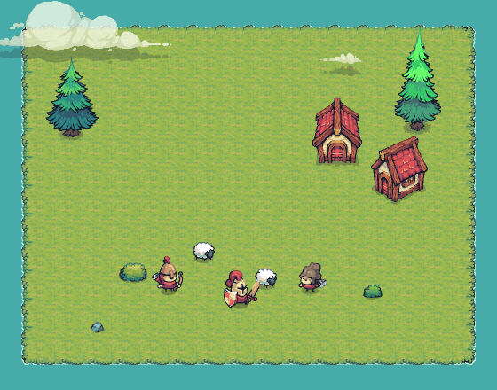

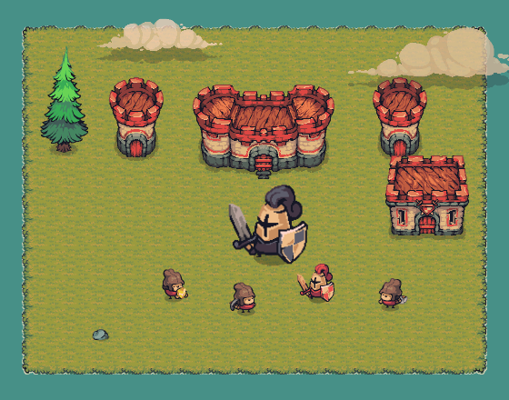
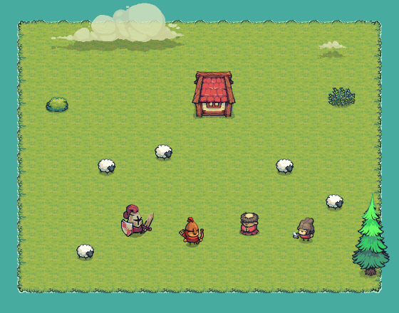
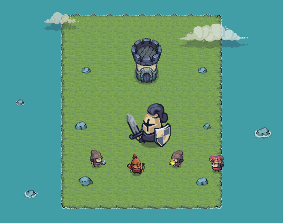
9Sảnh và tiến trình
Sảnh có thanh tài nguyên ở trên (ảnh đại diện, vàng, kim cương, cài đặt) và thanh 5 tab ở dưới. CHIẾN ĐẤU ở giữa, to nhất và là tab mặc định.
| Tab | Nội dung | Chấm đỏ khi |
|---|---|---|
| Cửa hàng | Rương Gỗ, Bạc, Vàng; đổi kim cương lấy vàng | Có rương miễn phí |
| Lính | Đội hình (cố định ở trên), bộ sưu tập cuộn được, chi tiết và nâng cấp lính | Có lính đủ vàng hoặc thẻ để nâng |
| CHIẾN ĐẤU | Chọn màn bằng vuốt trái phải, xem trước địch và thưởng, nút CHƠI; nút Sự kiện (tuần tra, triệu hồi) | Có màn mới; kho tuần tra đầy nửa; còn lượt triệu hồi miễn phí |
| Thành | Cấp thành, Xưởng 3 nâng cấp, sơ đồ ô gear đã mở | Đủ vàng nâng thành |
| Tướng | Danh sách tướng, chọn tướng dẫn đội, lên cấp, lên sao | Có tướng nâng được |
Cấp thành
| Cấp | Máu thành | Trần thịt | Ô gear | Ô đội | Giá (vàng) |
|---|---|---|---|---|---|
| 1 | ×1,00 | 20 | 12 | 3 | — |
| 2 | ×1,15 | 20 | 14 | 3 | 150 |
| 3 | ×1,30 | 22 | 16 | 4 | 250 |
| 4 | ×1,50 | 22 | 18 | 4 | 400 |
| 5 | ×1,70 | 24 | 20 | 4 | 600 |
| 6 | ×1,95 | 24 | 22 | 5 | 850 |
| 7 | ×2,20 | 26 | 23 | 5 | 1.200 |
| 8 | ×2,50 | 26 | 23 | 5 | 1.650 |
| 9 | ×2,85 | 28 | 23 | 5 | 2.200 |
| 10 | ×3,20 | 30 | 23 | 5 | 3.000 |
Máu thành là hệ số nhân với máu gốc của từng màn.
Xưởng
| Nâng cấp | Mỗi cấp | Tối đa | Giá cấp n |
|---|---|---|---|
| Lò thịt | +1 thịt thu nhập mỗi đợt | 5 | 120 × 1,6ⁿ |
| Kho dự trữ | +1 thịt khi vào trận | 4 | 100 × 1,8ⁿ |
| Bánh răng tổng | Gear sinh lính nhanh hơn 5% | 5 | 150 × 1,6ⁿ |
Cửa hàng rương
| Rương | Giá | Nội dung |
|---|---|---|
| Gỗ | Miễn phí mỗi 4 giờ | 3 thẻ + 50–100 vàng |
| Bạc | 600 vàng | 8 thẻ |
| Vàng | 120 kim cương | 25 thẻ, ít nhất 3 Hiếm trở lên; mỗi lần mở thứ 10 bảo đảm Sử thi trở lên; Sử thi ngẫu nhiên không đặt lại bộ đếm |
| Chiến thắng | Sau mỗi trận thắng | 2 thẻ (+1 nếu 3★) |
Đổi 20 kim cương lấy 500 vàng. Người chơi mới có 30 kim cương.
Mở rương
Phần thưởng được cộng ngay khi bấm mở, trước hoạt ảnh, nên bỏ qua hay tắt game giữa chừng không mất đồ. Hoạt ảnh gồm: rương rơi và nảy, chờ chạm (khe nắp sáng theo độ hiếm cao nhất bên trong), bật nắp, lật từng thẻ, dừng lâu hơn cho thẻ Sử thi và lính mới, rồi bảng tổng kết. Có nút BỎ QUA và tuỳ chọn "Mở rương nhanh" trong cài đặt.
Thưởng sau trận
| Trường hợp | Thưởng | Màn 1 | Màn 5 | Màn 10 |
|---|---|---|---|---|
| Thắng 3★ | 60 + 40 × số màn + 20 × số sao (vàng) | 160 | 320 | 520 |
| Lần đầu qua màn | Vàng ×2, mở màn sau, quà lính (nếu có) | 320 | 640 | 1.040 |
| 3★ lần đầu | +10 kim cương | |||
| Thua | 15 vàng × số đợt đã qua | |||
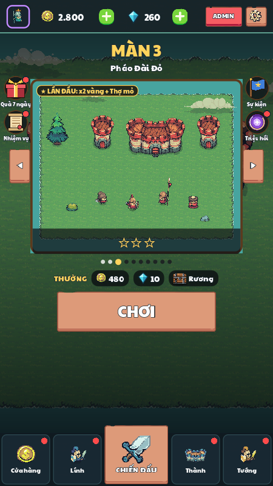
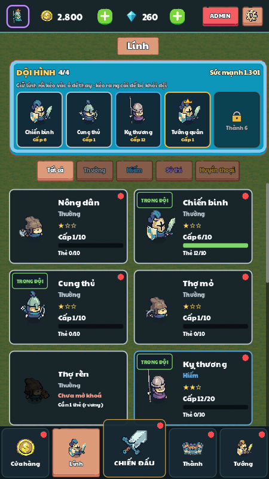
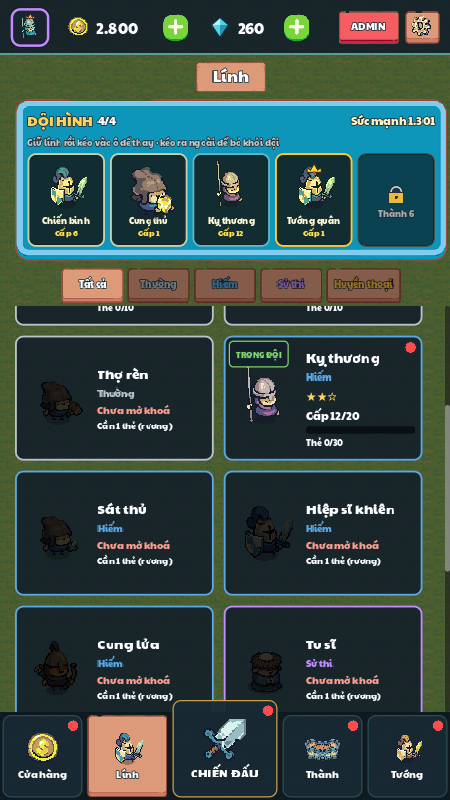
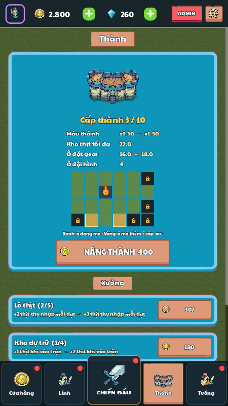
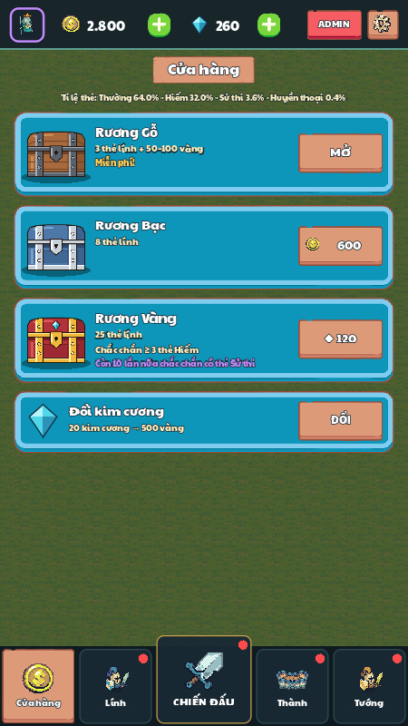
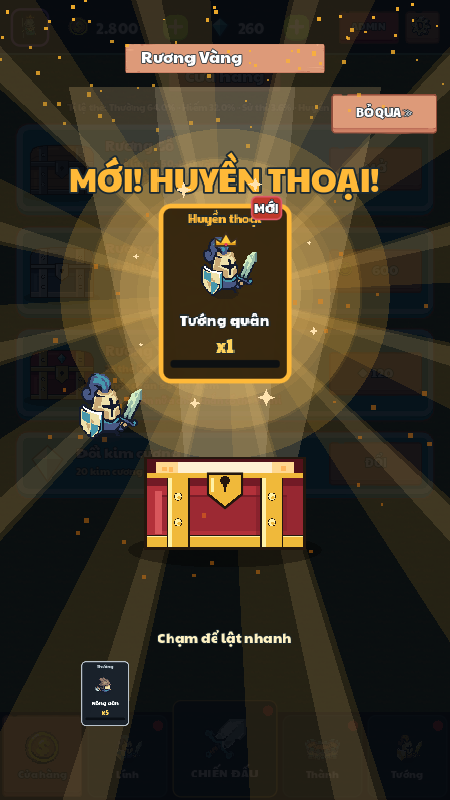
10Giữ chân người chơi
Quà đăng nhập 7 ngày
| Ngày | Quà |
|---|---|
| 1 | 300 vàng |
| 2 | 20 kim cương |
| 3 | 8 thẻ lính |
| 4 | 10 mảnh tướng nổi bật |
| 5 | 50 kim cương |
| 6 | 1.500 vàng |
| 7 | Tướng Hiền Giả Lục Diệp (Sử thi) |
Bỏ lỡ một ngày không mất chuỗi. Xong 7 ngày thì mở khung ảnh Vàng và chuỗi bắt đầu lại.
Nhiệm vụ ngày (làm mới lúc 0h)
| Nhiệm vụ | Thưởng |
|---|---|
| Đăng nhập | 100 vàng |
| Thắng 2 trận | 300 vàng |
| Mở 1 rương | 5 kim cương |
| Nâng cấp lính hoặc tướng 2 lần | 200 vàng |
| Thu hoạch tuần tra | 150 vàng |
| Triệu hồi tướng 1 lần | 10 kim cương |
Mỗi nhiệm vụ đã nhận thưởng +20 điểm năng động. Mốc 40 điểm: 400 vàng · 80: 20 kim cương · 120: 5 mảnh tướng nổi bật.
Tuần tra
- Vàng tích theo giờ thực, kể cả khi tắt game:
60 + 60 × số màn đã quavàng/giờ. - Kho chứa tối đa 8 giờ.
- Tuần tra nhanh: nhận ngay 2 giờ vàng, 2 lượt miễn phí mỗi ngày, sau đó 20 kim cương.
Hồ sơ và ảnh đại diện
- Chạm ảnh đại diện để đổi tên, ảnh, khung và xem thành tích.
- 25 ảnh: 2 hàng mở sẵn, hàng 3/4/5 mở khi qua 3/6/9 màn. Chân dung tướng đã có cũng dùng được.
- Khung: Gỗ (mặc định), Bạc (qua 3 màn), Vàng (đủ quà 7 ngày), Hoàng gia (có tướng Huyền thoại).
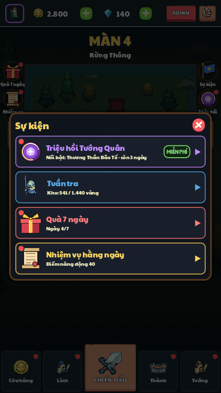
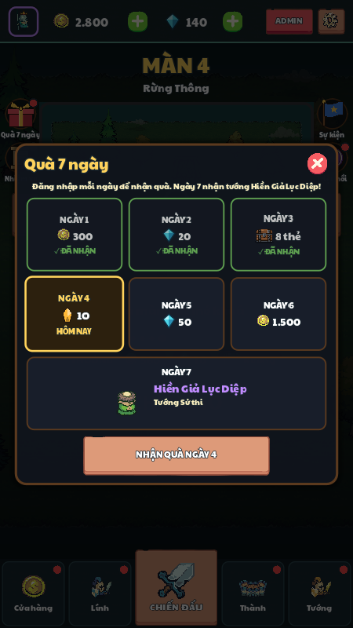
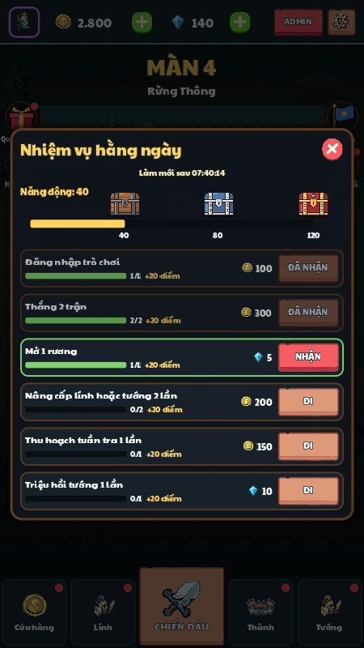
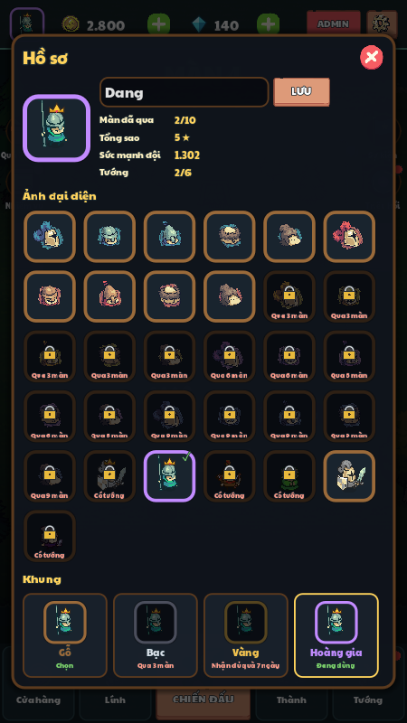
11Kinh tế tổng
| Tiền tệ | Nguồn | Chỗ tiêu |
|---|---|---|
| Vàng | Thắng, thua trận; tuần tra; rương Gỗ; nhiệm vụ; quà 7 ngày; triệu hồi ra vàng; đổi từ kim cương | Lên cấp lính, lên cấp tướng, nâng thành, Xưởng, rương Bạc |
| Kim cương | 30 lúc bắt đầu; 3★ lần đầu; nhiệm vụ và mốc điểm; quà 7 ngày | Rương Vàng, triệu hồi tướng, tuần tra nhanh thêm, đổi vàng |
| Thẻ lính | Rương, thưởng trận, quà qua màn, quà 7 ngày | Mở khoá lính, lên sao lính; thừa thì đổi 20 vàng |
| Mảnh tướng | Triệu hồi, quà 7 ngày, mốc nhiệm vụ, tướng trùng (20 mảnh) | Mở khoá tướng (30), lên sao tướng |
| Thịt (chỉ trong trận) | Thịt đầu trận, thu nhập đợt, lãi, giết địch, Đầu bếp, bán gear | Mua gear, đổi shop |
Không có thể lực giới hạn số trận. Game không có quảng cáo hay gói nạp; kim cương chỉ đến từ việc chơi.
Nhịp mục tiêu 30 phút đầu — cần thử nghiệm
- Qua màn 1–3, nhận Kỵ thương, Tu sĩ, Thợ mỏ.
- Mở khoảng 6 rương, nâng thành lên cấp 3–4 (đội 4 ô, 16–18 ô gear).
- 2–3 lính chính đạt cấp 4–5.
- Nhận quà ngày 1, hoàn thành 3–4 nhiệm vụ, thử triệu hồi miễn phí.
12Giao diện và hướng dẫn
Luồng màn hình
Từ sảnh: 5 tab ở dưới; ảnh đại diện mở Hồ sơ; nút Sự kiện, Quà 7 ngày, Nhiệm vụ mở popup; cài đặt có âm thanh và "Mở rương nhanh".
Hướng dẫn người mới (màn 1)
- Mua gear trong shop.
- Gear chạm quả cầu cam mới quay; chỉ gear đang quay mới sinh lính.
- Ghép 2 gear giống nhau.
- Bấm SẴN SÀNG.
- Hết đợt: nhận thịt và lãi.
Mỗi bước có mũi tên và khung sáng chỉ đúng chỗ, bỏ qua được bất cứ lúc nào. Save cũ đã qua màn 1 thì coi như đã xong hướng dẫn.
Nguyên tắc giao diện
- Chơi một tay: nút quan trọng (SẴN SÀNG, CHƠI, tab CHIẾN ĐẤU) nằm ở nửa dưới màn hình.
- Không đủ thịt thì thẻ shop mờ và giá đỏ; bàn đầy thì báo "Bàn đầy, hãy ghép hoặc bán".
- Mọi phần thưởng có hiệu ứng số chạy lên hoặc vật phẩm bay về thanh tài nguyên.
- Chữ tiếng Việt dùng font Paytone One; ký hiệu ★ ◀ ▶ lấy từ DejaVu Sans để không hiện ô vuông.
13Hình ảnh và âm thanh
Phong cách hình
- Pixel art Tiny Swords (Pixel Frog): lính, nhà, cây, UI giấy và gỗ.
- Ngôn ngữ màu: phe ta xanh, phe địch đỏ/đen, không bao giờ đổi. Bậc gear đổi màu áo lính ta. Độ hiếm: xám, xanh dương, tím, vàng cam.
- Hình dáng khác trước, màu khác sau: hai lính cùng sprite phải khác rõ ở đồ cầm, cỡ người hoặc hiệu ứng.
- Tướng đổi màu bằng shader (chỉ đổi vùng màu đội, giữ da, tóc, kim loại), thêm áo choàng và hào quang vẽ bằng code.
- Rương, bánh răng, ổ khoá, hoa văn ô đặc biệt được vẽ bằng code.
- Mỗi màn có nền riêng: cỏ, đá, nước, cây thông lay nhẹ.
Âm thanh
- Toàn bộ hiệu ứng âm thanh được tổng hợp bằng code (sóng sine, vuông, răng cưa, tam giác, nhiễu) lúc mở game, không dùng file âm thanh.
- Khoảng 25 âm: chém, tên bay, chết, hồi máu, đánh tường, đặt gear, ghép, mua, bán, đổi shop, xu, mở rương, lật thẻ, Sử thi, Huyền thoại, tướng xuất trận, bắt đầu đợt, thắng, thua, nhảy mừng…
- Mỗi âm có khoảng nghỉ tối thiểu để trận đông lính không bị ồn.
- Chưa có nhạc nền (mục 16).
14Kỹ thuật
Nền tảng
- Godot 4.7.2, GDScript, màn hình dọc 720×1280, co giãn theo cửa sổ.
- Dự án có preset xuất Android và Windows. Khả năng xuất Web cần kiểm tra renderer/template; không xác nhận bằng lần viết tài liệu này.
- Lưu game trong
user://save.json: ghi ra file tạm rồi đổi tên để không hỏng save khi tắt đột ngột.
Dữ liệu điều khiển cân bằng
- Mọi công thức và con số nằm trong
game/data/balance.json, tính bằng một bộ đọc công thức riêng. - Lính là file
troops/*.tres, màn làlevels/*.tres. - Bảng Admin (bản debug hoặc bản xuất có feature admin) sửa số trực tiếp, có biểu đồ và mô phỏng. Tab Lính có ô Tốc chạy, Tỉ lệ chí mạng, Sát thương chí mạng; DPS và sức mạnh đội đã tính cả chí mạng.
| Thư mục | Nội dung |
|---|---|
game/battle/ | Battle (pha nghỉ/đánh, shop, thưởng), GearBoard (lưới, truyền động, kéo thả, ghép), Gear, Unit (AI lính, kỹ năng), WaveDirector, Projectile, ShopRoller, Background |
game/core/ | PlayerData (save, tiền, lính, đội, thành, tướng, nhiệm vụ), Economy, Balance, FormulaEngine, Heroes, Meta, SoundLib, SpriteLib, Content |
game/menu/ | Home (thanh tài nguyên, 5 tab), các trang, popup sự kiện, quà, nhiệm vụ, hồ sơ |
game/ui/ | HUD trận, UiKit (theme, nút, font), Coach (hướng dẫn), ChestOpening, SummonOpening, shader đổi màu |
game/admin/ | Bảng Admin, Bot tự chơi, SimRunner |
tests/ | Kiểm thử chạy không cửa sổ và cảnh chụp ảnh, quay video |
Kiểm thử tự động
| Bài test | Kiểm tra | Kết quả trong tài liệu gốc |
|---|---|---|
| BalanceTest | Công thức, giá, thu nhập, lãi, hoàn tiền, bảng tỉ lệ, kỹ năng lính, chí mạng | 565/565 |
| MetaTest | Tướng, triệu hồi, bảo hiểm, quà 7 ngày, nhiệm vụ, avatar | 52/52 |
| TileTest | Luật 4 loại ô đặc biệt | 14/14 |
| JitterTest | Lính đứng gần nhau không giật, không chồng lên nhau | Đạt |
| SoundCheck | Mọi âm không câm, không vỡ tiếng | Đạt |
Các con số trên là kết quả lưu trong tài liệu gốc, không phải kết quả chạy lại ở lần tạo HTML này. Các test dùng hồ sơ tạm.
15Cân bằng và số liệu
Chưa có người chơi thật, nên cân bằng dùng bot tự chơi. Bot mua món ghép được trước, rồi món hiếm nhất mua nổi, giữ 5 thịt để ăn lãi từ đợt 3, và ghép ngay khi có thể. Mỗi màn 1–10 chạy 4 lần với hồ sơ người chơi hợp lý ở giai đoạn đó (cấp thành, cấp lính, đội hình).
Tỉ lệ thắng và thời gian trung bình mỗi trận, sau vòng chỉnh sức mạnh địch.
| Màn | Hệ số cũ | Hệ số mới | Thắng trước → sau | Lý do |
|---|---|---|---|---|
| 2 | 2,0 | 1,4 | 4/4 → 4/4 | Khó hơn màn 3 (1,5): gai độ khó sai chỗ |
| 8 | 2,8 | 2,4 | 1/4 → 2/4 | Bậc khó đột ngột sau màn 7 |
| 9 | 3,0 | 2,6 | 0/4 → 2/4 | Bot thua ngay đợt 1 |
| 10 | 3,0 | 2,7 | 0/4 → 2/4 | Trùm quá sức, giờ đúng mục tiêu 40–60% |
Số liệu bot là lịch sử cân bằng từ tài liệu gốc, chưa chạy lại cho lần tạo HTML này; không phải tỉ lệ thắng của người chơi thật.
Kiểm tra lại sau khi thêm chí mạng
| Phương án | Màn 1–4 | Màn 5 | Màn 6 | Màn 7 | Màn 8 | Màn 9 | Màn 10 |
|---|---|---|---|---|---|---|---|
| Chưa có chí mạng | 4/4 | 4/4 | 4/4 | 4/4 | 2/4 | 2/4 | 2/4 |
| Hai phe đều chí mạng | 4/4 | 3/4 | 2/4 | 3/4 | 1/4 | 0/4 | 1/4 |
| Chỉ lính ta chí mạng (đang dùng) | 4/4 | 4/4 | 4/4 | 4/4 | 2/4 | 1/4 | 2/4 |
Mỗi ô là số trận thắng trên 4 trận của bot. Với 4 trận mỗi màn, chênh 1 trận (màn 9) nằm trong sai số.
Mục tiêu và việc còn lại
- Mục tiêu tỉ lệ thắng: màn dễ 70–90%, màn vừa 40–60%, trùm 10–30% ở lần đầu, tăng dần khi người chơi nâng cấp.
- Màn 2–7 đang dễ hơn mục tiêu với bot. Người thật chơi chậm hơn bot nên có thể vẫn hợp lý; cần thử với người thật.
- Màn 8–9 vẫn khó hơn mục tiêu và còn lượt thua ngay đợt 1. Vòng chỉnh sau: làm đợt 1 của màn 8–10 nhẹ hơn thay vì hạ sức mạnh cả màn.
- Bot ghép ngay lập tức nên chơi giỏi hơn người mới. Số liệu này là giới hạn trên, không thay được thử nghiệm với người chơi.
Chỉ số sẽ đo khi có người chơi
| Chỉ số | Định nghĩa | Dùng để |
|---|---|---|
| Reach | % người chơi tới được màn N | Tìm màn làm người chơi dừng |
| Churn | % người bỏ game sau màn N | Tìm gai độ khó hoặc màn nhàm |
| Win rate | Số lần thắng ÷ số lần chơi màn N | So với mục tiêu theo độ khó |
| Thời gian chơi | Thời gian trung bình một trận | Giữ trận trong 3–5 phút |
16Lộ trình phát triển
Đợt 1 có trong mã nguồn. Các đợt 2–4, kỹ năng chủ động, vô tận và màn 16–50 là đề xuất, chưa triển khai.
| Đợt | Nội dung | Vì sao |
|---|---|---|
| 1 Đã xong | 4 loại ô đặc biệt, màn 11–15, hướng dẫn người mới | Làm sâu cơ chế bánh răng mà không cần hình mới |
| 2 | Chọn 1 trong 3 buff giữa đợt; cộng hưởng lính (3 lính cận chiến, 2 lính bắn xa…) | Thêm quyết định trong trận, tăng khả năng chơi lại |
| 3 | Kỹ năng chủ động của tướng (nút bấm, hồi chiêu); địch mới; trùm nhiều giai đoạn | Cho người chơi một khoảnh khắc chủ động mỗi đợt |
| 4 | Chế độ vô tận, thử thách ngày, sự kiện theo mùa | Nội dung lặp lại không cần làm màn mới |
| Sau đó | Màn 16–50 theo kế hoạch ở mục 8; nhạc nền; tiếng Anh | Đủ nội dung cho bản hoàn chỉnh |
Rủi ro đã biết
- Hình: bộ Tiny Swords miễn phí chỉ có 5 loại người. Hướng xử lý: đổi đồ cầm, shader đổi màu, hiệu ứng vẽ bằng code; về lâu dài mua bản đầy đủ (có phe Goblin) cho địch.
- Độ khó màn 8–10 chưa đạt mục tiêu (mục 15).
- Xuất bản: cần kiểm tra hiệu năng, kích thước và tài nguyên trên từng nền tảng trước phát hành.
- Cân bằng dựa trên bot, chưa có dữ liệu người chơi thật.
APhụ lục
Công thức trong balance.json
| Tên | Công thức |
|---|---|
| Giá lên cấp lính | round(50 × 1,35^(level − 1)) |
| Hệ số lính | (1 + 0,08 × (level − 1)) × 1,2^(stars − 1) |
| Hệ số bậc gear | 1,75^(tier − 1) |
| Giây sinh 1 lính | base × 0,92^(tier − 1) ÷ (1 + master_bonus), mốc 0,2 là kiểm tra Admin, không phải clamp runtime |
| Thu nhập đợt | 5 + wave + bonus |
| Lãi | min(floor(meat ÷ 5), 3) |
| Sát thương trung bình có chí mạng | damage × (1 + crit_chance × (crit_mult − 1)) |
| Hệ số chỉ số địch | power × (1 + 0,2 × wave) |
| Sức mạnh đánh trực tiếp của một địch | HP thực × (sát thương thực / hồi chiêu), chỉ lính cận chiến/bắn xa |
| Tải sức ép một đợt | Σ(số lượng × HP thực × DPS thực) / HP thành |
| Đỉnh tải nhập trong Δ giây | max(Σ C sinh trong [t,t+Δ)) / (Δ × HP thành) |
| Sát thương vào thành | damage × 0,35 |
| Giá Xưởng | round(base × growth^level) |
| Vàng thắng | 60 + 40 × (level + 1) + 20 × stars |
| Vàng thua | 15 × waves |
| Vàng tuần tra / giờ | 60 + 60 × cleared |
| Sao cuối trận | 1 + (hp ≥ 45%) + (hp ≥ 80%) |
Thuật ngữ
| Từ | Nghĩa |
|---|---|
| Gear | Bánh răng trên bàn; mỗi gear gắn với một loại lính và có bậc 1–5 |
| Cầu truyền động | Quả cầu cam ở ô (2,1), nguồn quay của mọi gear |
| Bậc | Cấp của gear trong trận, tăng khi ghép |
| Cấp, sao (lính) | Nâng cấp ngoài sảnh bằng vàng và thẻ |
| Thịt | Tiền trong trận |
| Chí mạng | Đòn đánh gây sát thương nhân hệ số, xảy ra theo tỉ lệ riêng của từng lính |
| Tốc chạy | Quãng đường lính chạy mỗi giây (điểm ảnh) |
| Tinh nhuệ | Địch có máu ×5, sát thương ×1,8, cho 3 thịt khi hạ |
| Lượt nghỉ / lượt đánh | Hai pha xen kẽ trong một màn |
| Bảo hiểm (pity) | Bảo đảm ra phần thưởng hiếm sau một số lần mở hoặc triệu hồi |
Thông số mặc định theo commit 2bda420. Admin có thể ghi đè riêng trên máy trong user://balance_override.json.
BChi tiết từng đợt của 15 màn
Danh sách dưới đây trích trực tiếp từ file màn .tres. Mở từng màn để xem số lượng, thời điểm bắt đầu và khoảng cách sinh của mỗi nhóm. Thời gian tính từ lúc bấm SẴN SÀNG của đợt, ở tốc độ ×1.
Thời điểm ra quân cuối chỉ là thời điểm kết thúc lịch sinh. Đợt vẫn tiếp tục đến khi giết hết địch. Trường gap và prep_time cũ không phải giới hạn thời gian trận.
Màn 1 · Đồng Cỏ
Máu thành cơ sở: 100 · thịt đầu cơ sở: 6 · hệ số chỉ số enemy_power: 0,9.
Tải chiến đấu của từng đợt
Cộng từng đơn vị; không giả định toàn bộ địch đồng thời sống. P dùng máu thành cơ sở của màn. Kỹ năng/hỗ trợ đọc kèm các chỉ số; xem định nghĩa đầy đủ.
| Đợt | Tổng HP | DPS đánh theo danh sách | Tổng C | P_đợt | P_dồn_10s | HPS Tu sĩ theo danh sách | Đầu bếp |
|---|---|---|---|---|---|---|---|
| 1 | 135 | 25 | 675 | 6,75 | 0,68 | 0 | 0 |
| 2 | 378 | 53,28 | 2.752,7 | 27,53 | 2,75 | 0 | 0 |
| 3 | 685,44 | 94,49 | 6.299,92 | 63 | 6,3 | 0 | 0 |
| 4 | 1.690,56 | 172,24 | 23.711,35 | 237,11 | 23,37 | 0 | 0 |
Bố trí ô: Không có ô đặc biệt. Tọa độ bắt đầu từ 0; ô đặc biệt chỉ tác động khi ô đó đã mở theo cấp thành.
| Đợt | Các nhóm sinh địch | Tổng | Hệ số địch thường | Ra quân cuối |
|---|---|---|---|---|
| 1 | Nông dân ×5 Bắt đầu 0s · giãn 1,8s / lính | 5 | ×0,9 | 7,2s |
| 2 | Nông dân ×6 Bắt đầu 0s · giãn 1,4s / lính Chiến binh ×2 Bắt đầu 4s · giãn 3s / lính | 8 | ×1,08 | 7s |
| 3 | Chiến binh ×4 Bắt đầu 0s · giãn 2s / lính Cung thủ ×3 Bắt đầu 3s · giãn 2,5s / lính Nông dân ×4 Bắt đầu 6s · giãn 1,2s / lính | 11 | ×1,26 | 9,6s |
| 4 | Nông dân ×8 Bắt đầu 0s · giãn 1s / lính Chiến binh ×5 Bắt đầu 2s · giãn 1,8s / lính Cung thủ ×3 Bắt đầu 5s · giãn 2s / lính Chiến binh ×1 TINH NHUỆ Bắt đầu 10s · giãn 1s / lính | 17 | ×1,44 | 10s |
Nguồn: game/data/levels/level_01.tres. Tinh nhuệ nhân thêm ×5 máu và ×1,8 sát thương trên hệ số trong bảng.
Màn 2 · Đồi Đá
Máu thành cơ sở: 100 · thịt đầu cơ sở: 7 · hệ số chỉ số enemy_power: 1,4.
Tải chiến đấu của từng đợt
Cộng từng đơn vị; không giả định toàn bộ địch đồng thời sống. P dùng máu thành cơ sở của màn. Kỹ năng/hỗ trợ đọc kèm các chỉ số; xem định nghĩa đầy đủ.
| Đợt | Tổng HP | DPS đánh theo danh sách | Tổng C | P_đợt | P_dồn_10s | HPS Tu sĩ theo danh sách | Đầu bếp |
|---|---|---|---|---|---|---|---|
| 1 | 406 | 82,3 | 4.704 | 47,04 | 4,7 | 0 | 0 |
| 2 | 902,16 | 113,72 | 11.784,61 | 117,85 | 11,78 | 0 | 0 |
| 3 | 1.009,4 | 211,84 | 18.567,73 | 185,68 | 18,57 | 0 | 0 |
| 4 | 1.825,6 | 270,59 | 35.871,98 | 358,72 | 32,46 | 0 | 0 |
| 5 | 3.016,44 | 388,48 | 81.425,15 | 814,25 | 80,37 | 0 | 0 |
Bố trí ô: Không có ô đặc biệt. Tọa độ bắt đầu từ 0; ô đặc biệt chỉ tác động khi ô đó đã mở theo cấp thành.
| Đợt | Các nhóm sinh địch | Tổng | Hệ số địch thường | Ra quân cuối |
|---|---|---|---|---|
| 1 | Nông dân ×6 Bắt đầu 0s · giãn 1,4s / lính Kỵ thương ×2 Bắt đầu 3s · giãn 3s / lính | 8 | ×1,4 | 7s |
| 2 | Chiến binh ×5 Bắt đầu 0s · giãn 1,6s / lính Cung thủ ×4 Bắt đầu 2s · giãn 2s / lính | 9 | ×1,68 | 8s |
| 3 | Kỵ thương ×5 Bắt đầu 0s · giãn 1,5s / lính Nông dân ×8 Bắt đầu 1s · giãn 0,9s / lính | 13 | ×1,96 | 7,3s |
| 4 | Chiến binh ×6 Bắt đầu 0s · giãn 1,4s / lính Cung thủ ×5 Bắt đầu 2s · giãn 1,8s / lính Kỵ thương ×3 Bắt đầu 5s · giãn 2,5s / lính | 14 | ×2,24 | 10s |
| 5 | Nông dân ×10 Bắt đầu 0s · giãn 0,8s / lính Chiến binh ×6 Bắt đầu 2s · giãn 1,4s / lính Cung thủ ×4 Bắt đầu 4s · giãn 2s / lính Kỵ thương ×1 TINH NHUỆ Bắt đầu 8s · giãn 1s / lính | 21 | ×2,52 | 10s |
Nguồn: game/data/levels/level_02.tres. Tinh nhuệ nhân thêm ×5 máu và ×1,8 sát thương trên hệ số trong bảng.
Màn 3 · Pháo Đài Đỏ
Máu thành cơ sở: 120 · thịt đầu cơ sở: 8 · hệ số chỉ số enemy_power: 1,5.
Tải chiến đấu của từng đợt
Cộng từng đơn vị; không giả định toàn bộ địch đồng thời sống. P dùng máu thành cơ sở của màn. Kỹ năng/hỗ trợ đọc kèm các chỉ số; xem định nghĩa đầy đủ.
| Đợt | Tổng HP | DPS đánh theo danh sách | Tổng C | P_đợt | P_dồn_10s | HPS Tu sĩ theo danh sách | Đầu bếp |
|---|---|---|---|---|---|---|---|
| 1 | 691,5 | 60 | 7.650 | 63,75 | 6,38 | 8,33 | 0 |
| 2 | 761,4 | 164,39 | 13.852,25 | 115,44 | 11,54 | 10 | 0 |
| 3 | 1.799,7 | 224 | 23.814 | 198,45 | 19,84 | 23,33 | 0 |
| 4 | 2.215,2 | 317,53 | 66.142,52 | 551,19 | 55,12 | 0 | 0 |
| 5 | 3.150,9 | 438,08 | 72.238,29 | 601,99 | 59,02 | 30 | 0 |
| 6 | 3.828 | 403,21 | 137.247,69 | 1.143,73 | 112,92 | 50 | 0 |
Bố trí ô: Không có ô đặc biệt. Tọa độ bắt đầu từ 0; ô đặc biệt chỉ tác động khi ô đó đã mở theo cấp thành.
| Đợt | Các nhóm sinh địch | Tổng | Hệ số địch thường | Ra quân cuối |
|---|---|---|---|---|
| 1 | Chiến binh ×5 Bắt đầu 0s · giãn 1,4s / lính Tu sĩ ×1 Bắt đầu 4s · giãn 1s / lính | 6 | ×1,5 | 5,6s |
| 2 | Kỵ thương ×5 Bắt đầu 0s · giãn 1,4s / lính Cung thủ ×4 Bắt đầu 2s · giãn 2s / lính Tu sĩ ×1 Bắt đầu 5s · giãn 1s / lính | 10 | ×1,8 | 8s |
| 3 | Nông dân ×12 Bắt đầu 0s · giãn 0,7s / lính Chiến binh ×5 Bắt đầu 2s · giãn 1,5s / lính Tu sĩ ×2 Bắt đầu 5s · giãn 3s / lính | 19 | ×2,1 | 8s |
| 4 | Kỵ thương ×6 Bắt đầu 0s · giãn 1,2s / lính Cung thủ ×6 Bắt đầu 2s · giãn 1,5s / lính Chiến binh ×1 TINH NHUỆ Bắt đầu 6s · giãn 1s / lính | 13 | ×2,4 | 9,5s |
| 5 | Chiến binh ×8 Bắt đầu 0s · giãn 1,1s / lính Kỵ thương ×5 Bắt đầu 3s · giãn 1,5s / lính Tu sĩ ×2 Bắt đầu 4s · giãn 3s / lính Cung thủ ×5 Bắt đầu 5s · giãn 1,6s / lính | 20 | ×2,7 | 11,4s |
| 6 | Chiến binh ×1 TINH NHUỆ Bắt đầu 0s · giãn 1s / lính Kỵ thương ×1 TINH NHUỆ Bắt đầu 4s · giãn 1s / lính Nông dân ×10 Bắt đầu 1s · giãn 0,8s / lính Cung thủ ×6 Bắt đầu 3s · giãn 1,4s / lính Tu sĩ ×3 Bắt đầu 6s · giãn 2,5s / lính | 21 | ×3 | 11s |
Nguồn: game/data/levels/level_03.tres. Tinh nhuệ nhân thêm ×5 máu và ×1,8 sát thương trên hệ số trong bảng.
Màn 4 · Rừng Thông
Máu thành cơ sở: 120 · thịt đầu cơ sở: 9 · hệ số chỉ số enemy_power: 1,9.
Tải chiến đấu của từng đợt
Cộng từng đơn vị; không giả định toàn bộ địch đồng thời sống. P dùng máu thành cơ sở của màn. Kỹ năng/hỗ trợ đọc kèm các chỉ số; xem định nghĩa đầy đủ.
| Đợt | Tổng HP | DPS đánh theo danh sách | Tổng C | P_đợt | P_dồn_10s | HPS Tu sĩ theo danh sách | Đầu bếp |
|---|---|---|---|---|---|---|---|
| 1 | 699,2 | 149,34 | 12.907,14 | 107,56 | 10,76 | 10,56 | 0 |
| 2 | 2.086,2 | 321,27 | 40.027,68 | 333,56 | 31,91 | 0 | 0 |
| 3 | 1.928,5 | 254,18 | 35.849,71 | 298,75 | 27,91 | 0 | 0 |
| 4 | 3.094,72 | 369,48 | 73.591,57 | 613,26 | 50,85 | 0 | 0 |
| 5 | 2.821,5 | 600,75 | 95.130,72 | 792,76 | 72,78 | 0 | 0 |
| 6 | 5.540,4 | 512,47 | 196.339,57 | 1.636,16 | 163,62 | 42,22 | 0 |
Bố trí ô: Không có ô đặc biệt. Tọa độ bắt đầu từ 0; ô đặc biệt chỉ tác động khi ô đó đã mở theo cấp thành.
| Đợt | Các nhóm sinh địch | Tổng | Hệ số địch thường | Ra quân cuối |
|---|---|---|---|---|
| 1 | Kỵ thương ×4 Bắt đầu 0s · giãn 1,6s / lính Cung thủ ×4 Bắt đầu 2s · giãn 1,6s / lính Tu sĩ ×1 Bắt đầu 4s · giãn 1,6s / lính | 9 | ×1,9 | 6,8s |
| 2 | Nông dân ×9 Bắt đầu 0s · giãn 1,5s / lính Chiến binh ×5 Bắt đầu 2s · giãn 1,5s / lính Kỵ thương ×4 Bắt đầu 4s · giãn 1,5s / lính | 18 | ×2,28 | 12s |
| 3 | Nông dân ×10 Bắt đầu 0s · giãn 1,4s / lính Chiến binh ×5 Bắt đầu 2s · giãn 1,4s / lính | 15 | ×2,66 | 12,6s |
| 4 | Chiến binh ×10 Bắt đầu 0s · giãn 1,3s / lính Cung thủ ×6 Bắt đầu 2s · giãn 1,3s / lính | 16 | ×3,04 | 11,7s |
| 5 | Kỵ thương ×9 Bắt đầu 0s · giãn 1,2s / lính Nông dân ×11 Bắt đầu 2s · giãn 1,2s / lính | 20 | ×3,42 | 14s |
| 6 | Chiến binh ×9 Bắt đầu 0s · giãn 1,1s / lính Cung thủ ×7 Bắt đầu 2s · giãn 1,1s / lính Tu sĩ ×2 Bắt đầu 4s · giãn 1,1s / lính Chiến binh ×1 TINH NHUỆ Bắt đầu 3s · giãn 1s / lính | 19 | ×3,8 | 8,8s |
Nguồn: game/data/levels/level_04.tres. Tinh nhuệ nhân thêm ×5 máu và ×1,8 sát thương trên hệ số trong bảng.
Màn 5 · Hẻm Núi
Máu thành cơ sở: 120 · thịt đầu cơ sở: 10 · hệ số chỉ số enemy_power: 2,2.
Tải chiến đấu của từng đợt
Cộng từng đơn vị; không giả định toàn bộ địch đồng thời sống. P dùng máu thành cơ sở của màn. Kỹ năng/hỗ trợ đọc kèm các chỉ số; xem định nghĩa đầy đủ.
| Đợt | Tổng HP | DPS đánh theo danh sách | Tổng C | P_đợt | P_dồn_10s | HPS Tu sĩ theo danh sách | Đầu bếp |
|---|---|---|---|---|---|---|---|
| 1 | 1.826 | 269,78 | 33.073,33 | 275,61 | 26,89 | 0 | 0 |
| 2 | 2.389,2 | 232,32 | 43.769,09 | 364,74 | 34,38 | 0 | 0 |
| 3 | 2.873,64 | 349,7 | 69.090,18 | 575,75 | 52,2 | 0 | 0 |
| 4 | 3.766,4 | 679,4 | 176.769,71 | 1.473,08 | 136,64 | 0 | 0 |
| 5 | 3.754,08 | 445,35 | 106.586,63 | 888,22 | 88,82 | 44 | 0 |
| 6 | 5.473,6 | 841,51 | 274.226,95 | 2.285,22 | 225,4 | 48,89 | 0 |
Bố trí ô: Không có ô đặc biệt. Tọa độ bắt đầu từ 0; ô đặc biệt chỉ tác động khi ô đó đã mở theo cấp thành.
| Đợt | Các nhóm sinh địch | Tổng | Hệ số địch thường | Ra quân cuối |
|---|---|---|---|---|
| 1 | Nông dân ×8 Bắt đầu 0s · giãn 1,6s / lính Chiến binh ×5 Bắt đầu 2s · giãn 1,6s / lính Kỵ thương ×3 Bắt đầu 4s · giãn 1,6s / lính | 16 | ×2,2 | 11,2s |
| 2 | Thợ mỏ ×8 Bắt đầu 0s · giãn 1,5s / lính Chiến binh ×5 Bắt đầu 2s · giãn 1,5s / lính | 13 | ×2,64 | 10,5s |
| 3 | Chiến binh ×9 Bắt đầu 0s · giãn 1,4s / lính Cung thủ ×6 Bắt đầu 2s · giãn 1,4s / lính | 15 | ×3,08 | 11,2s |
| 4 | Kỵ thương ×9 Bắt đầu 0s · giãn 1,3s / lính Nông dân ×10 Bắt đầu 2s · giãn 1,3s / lính Kỵ thương ×1 TINH NHUỆ Bắt đầu 5s · giãn 1s / lính | 20 | ×3,52 | 13,7s |
| 5 | Chiến binh ×8 Bắt đầu 0s · giãn 1,2s / lính Cung thủ ×7 Bắt đầu 2s · giãn 1,2s / lính Tu sĩ ×2 Bắt đầu 4s · giãn 1,2s / lính | 17 | ×3,96 | 9,2s |
| 6 | Kỵ thương ×9 Bắt đầu 0s · giãn 1,1s / lính Cung thủ ×9 Bắt đầu 2s · giãn 1,1s / lính Tu sĩ ×2 Bắt đầu 4s · giãn 1,1s / lính Chiến binh ×1 TINH NHUỆ Bắt đầu 3s · giãn 1s / lính | 21 | ×4,4 | 10,8s |
Nguồn: game/data/levels/level_05.tres. Tinh nhuệ nhân thêm ×5 máu và ×1,8 sát thương trên hệ số trong bảng.
Màn 6 · Làng Bỏ Hoang
Máu thành cơ sở: 130 · thịt đầu cơ sở: 11 · hệ số chỉ số enemy_power: 2,3.
Tải chiến đấu của từng đợt
Cộng từng đơn vị; không giả định toàn bộ địch đồng thời sống. P dùng máu thành cơ sở của màn. Kỹ năng/hỗ trợ đọc kèm các chỉ số; xem định nghĩa đầy đủ.
| Đợt | Tổng HP | DPS đánh theo danh sách | Tổng C | P_đợt | P_dồn_10s | HPS Tu sĩ theo danh sách | Đầu bếp |
|---|---|---|---|---|---|---|---|
| 1 | 1.403 | 188,6 | 22.323,8 | 171,72 | 15,82 | 0 | 0 |
| 2 | 2.263,2 | 272,18 | 48.822,96 | 375,56 | 33,57 | 0 | 0 |
| 3 | 2.962,4 | 482,41 | 87.924,03 | 676,34 | 61,89 | 0 | 0 |
| 4 | 4.331,36 | 411,83 | 169.144,58 | 1.301,11 | 130,11 | 40,89 | 0 |
| 5 | 3.390,66 | 732,17 | 137.881,49 | 1.060,63 | 100,95 | 46 | 0 |
| 6 | 7.636 | 1.128,16 | 289.186,67 | 2.224,51 | 203,46 | 0 | 0 |
| 7 | 8.753,8 | 943,18 | 390.198,86 | 3.001,53 | 273,89 | 0 | 0 |
Bố trí ô: Không có ô đặc biệt. Tọa độ bắt đầu từ 0; ô đặc biệt chỉ tác động khi ô đó đã mở theo cấp thành.
| Đợt | Các nhóm sinh địch | Tổng | Hệ số địch thường | Ra quân cuối |
|---|---|---|---|---|
| 1 | Nông dân ×9 Bắt đầu 0s · giãn 1,6s / lính Chiến binh ×4 Bắt đầu 2s · giãn 1,6s / lính | 13 | ×2,3 | 12,8s |
| 2 | Chiến binh ×8 Bắt đầu 0s · giãn 1,5s / lính Cung thủ ×5 Bắt đầu 2s · giãn 1,5s / lính | 13 | ×2,76 | 10,5s |
| 3 | Kỵ thương ×8 Bắt đầu 0s · giãn 1,4s / lính Thợ mỏ ×8 Bắt đầu 2s · giãn 1,4s / lính | 16 | ×3,22 | 11,8s |
| 4 | Chiến binh ×8 Bắt đầu 0s · giãn 1,3s / lính Cung lửa ×5 Bắt đầu 2s · giãn 1,3s / lính Tu sĩ ×2 Bắt đầu 4s · giãn 1,3s / lính Kỵ thương ×1 TINH NHUỆ Bắt đầu 5s · giãn 1s / lính | 16 | ×3,68 | 9,1s |
| 5 | Kỵ thương ×9 Bắt đầu 0s · giãn 1,2s / lính Cung thủ ×9 Bắt đầu 2s · giãn 1,2s / lính Tu sĩ ×2 Bắt đầu 4s · giãn 1,2s / lính | 20 | ×4,14 | 11,6s |
| 6 | Nông dân ×16 Bắt đầu 0s · giãn 1,1s / lính Chiến binh ×10 Bắt đầu 2s · giãn 1,1s / lính Kỵ thương ×6 Bắt đầu 4s · giãn 1,1s / lính | 32 | ×4,6 | 16,5s |
| 7 | Nông dân ×18 Bắt đầu 0s · giãn 1s / lính Chiến binh ×9 Bắt đầu 2s · giãn 1s / lính Chiến binh ×1 TINH NHUỆ Bắt đầu 3s · giãn 1s / lính | 28 | ×5,06 | 17s |
Nguồn: game/data/levels/level_06.tres. Tinh nhuệ nhân thêm ×5 máu và ×1,8 sát thương trên hệ số trong bảng.
Màn 7 · Đầm Lầy
Máu thành cơ sở: 130 · thịt đầu cơ sở: 12 · hệ số chỉ số enemy_power: 2,5.
Tải chiến đấu của từng đợt
Cộng từng đơn vị; không giả định toàn bộ địch đồng thời sống. P dùng máu thành cơ sở của màn. Kỹ năng/hỗ trợ đọc kèm các chỉ số; xem định nghĩa đầy đủ.
| Đợt | Tổng HP | DPS đánh theo danh sách | Tổng C | P_đợt | P_dồn_10s | HPS Tu sĩ theo danh sách | Đầu bếp |
|---|---|---|---|---|---|---|---|
| 1 | 1.837,5 | 226,54 | 35.807,69 | 275,44 | 27,54 | 0 | 0 |
| 2 | 1.839 | 550,13 | 76.345,71 | 587,27 | 58,73 | 0 | 0 |
| 3 | 2.922,5 | 341,38 | 72.557,69 | 558,14 | 55,81 | 38,89 | 0 |
| 4 | 4.044 | 720,45 | 215.212,31 | 1.655,48 | 163,16 | 44,44 | 0 |
| 5 | 6.435 | 831,14 | 201.487,5 | 1.549,9 | 139,41 | 0 | 0 |
| 6 | 5.950 | 792,22 | 206.833,33 | 1.591,03 | 136,67 | 0 | 0 |
| 7 | 12.248,5 | 1.207,89 | 737.029,62 | 5.669,46 | 487,83 | 0 | 0 |
Bố trí ô: Không có ô đặc biệt. Tọa độ bắt đầu từ 0; ô đặc biệt chỉ tác động khi ô đó đã mở theo cấp thành.
| Đợt | Các nhóm sinh địch | Tổng | Hệ số địch thường | Ra quân cuối |
|---|---|---|---|---|
| 1 | Chiến binh ×7 Bắt đầu 0s · giãn 1,6s / lính Cung thủ ×5 Bắt đầu 2s · giãn 1,6s / lính | 12 | ×2,5 | 9,6s |
| 2 | Kỵ thương ×7 Bắt đầu 0s · giãn 1,5s / lính Sát thủ ×6 Bắt đầu 2s · giãn 1,5s / lính | 13 | ×3 | 9,5s |
| 3 | Chiến binh ×7 Bắt đầu 0s · giãn 1,4s / lính Cung thủ ×6 Bắt đầu 2s · giãn 1,4s / lính Tu sĩ ×2 Bắt đầu 4s · giãn 1,4s / lính | 15 | ×3,5 | 9s |
| 4 | Kỵ thương ×8 Bắt đầu 0s · giãn 1,3s / lính Cung thủ ×8 Bắt đầu 2s · giãn 1,3s / lính Tu sĩ ×2 Bắt đầu 4s · giãn 1,3s / lính Kỵ thương ×1 TINH NHUỆ Bắt đầu 5s · giãn 1s / lính | 19 | ×4 | 11,1s |
| 5 | Nông dân ×15 Bắt đầu 0s · giãn 1,2s / lính Hiệp sĩ khiên ×5 Bắt đầu 2s · giãn 1,2s / lính Kỵ thương ×6 Bắt đầu 4s · giãn 1,2s / lính | 26 | ×4,5 | 16,8s |
| 6 | Nông dân ×17 Bắt đầu 0s · giãn 1,1s / lính Chiến binh ×8 Bắt đầu 2s · giãn 1,1s / lính | 25 | ×5 | 17,6s |
| 7 | Chiến binh ×15 Bắt đầu 0s · giãn 1s / lính Cung thủ ×9 Bắt đầu 2s · giãn 1s / lính Chiến binh ×1 TINH NHUỆ Bắt đầu 3s · giãn 1s / lính Kỵ thương ×1 TINH NHUỆ Bắt đầu 7s · giãn 1s / lính | 26 | ×5,5 | 14s |
Nguồn: game/data/levels/level_07.tres. Tinh nhuệ nhân thêm ×5 máu và ×1,8 sát thương trên hệ số trong bảng.
Màn 8 · Thành Đá Đen
Máu thành cơ sở: 140 · thịt đầu cơ sở: 13 · hệ số chỉ số enemy_power: 2,4.
Tải chiến đấu của từng đợt
Cộng từng đơn vị; không giả định toàn bộ địch đồng thời sống. P dùng máu thành cơ sở của màn. Kỹ năng/hỗ trợ đọc kèm các chỉ số; xem định nghĩa đầy đủ.
| Đợt | Tổng HP | DPS đánh theo danh sách | Tổng C | P_đợt | P_dồn_10s | HPS Tu sĩ theo danh sách | Đầu bếp |
|---|---|---|---|---|---|---|---|
| 1 | 1.500 | 320,48 | 35.904 | 256,46 | 23,59 | 0 | 0 |
| 2 | 2.404,8 | 280,91 | 49.128,37 | 350,92 | 35,09 | 32 | 0 |
| 3 | 2.499,84 | 528,2 | 80.729,32 | 576,64 | 54,54 | 0 | 2 |
| 4 | 6.988,8 | 867,14 | 281.265,62 | 2.009,04 | 188,57 | 0 | 0 |
| 5 | 5.011,2 | 660,48 | 151.289,86 | 1.080,64 | 92,51 | 0 | 0 |
| 6 | 6.528 | 657,6 | 238.924,8 | 1.706,61 | 125,9 | 0 | 0 |
| 7 | 9.847,2 | 1.510,59 | 669.639,17 | 4.783,14 | 419,9 | 0 | 0 |
Bố trí ô: Không có ô đặc biệt. Tọa độ bắt đầu từ 0; ô đặc biệt chỉ tác động khi ô đó đã mở theo cấp thành.
| Đợt | Các nhóm sinh địch | Tổng | Hệ số địch thường | Ra quân cuối |
|---|---|---|---|---|
| 1 | Kỵ thương ×7 Bắt đầu 0s · giãn 1,6s / lính Nông dân ×8 Bắt đầu 2s · giãn 1,6s / lính | 15 | ×2,4 | 13,2s |
| 2 | Chiến binh ×7 Bắt đầu 0s · giãn 1,5s / lính Cung thủ ×6 Bắt đầu 2s · giãn 1,5s / lính Tu sĩ ×2 Bắt đầu 4s · giãn 1,5s / lính | 15 | ×2,88 | 9,5s |
| 3 | Kỵ thương ×8 Bắt đầu 0s · giãn 1,4s / lính Cung thủ ×8 Bắt đầu 2s · giãn 1,4s / lính Đầu bếp ×2 Bắt đầu 4s · giãn 1,4s / lính | 18 | ×3,36 | 11,8s |
| 4 | Thợ rèn ×10 Bắt đầu 0s · giãn 1,3s / lính Chiến binh ×9 Bắt đầu 2s · giãn 1,3s / lính Kỵ thương ×6 Bắt đầu 4s · giãn 1,3s / lính Kỵ thương ×1 TINH NHUỆ Bắt đầu 5s · giãn 1s / lính | 26 | ×3,84 | 12,4s |
| 5 | Nông dân ×16 Bắt đầu 0s · giãn 1,2s / lính Chiến binh ×8 Bắt đầu 2s · giãn 1,2s / lính | 24 | ×4,32 | 18s |
| 6 | Chiến binh ×14 Bắt đầu 0s · giãn 1,1s / lính Pháo thủ ×5 Bắt đầu 2s · giãn 1,1s / lính | 19 | ×4,8 | 14,3s |
| 7 | Kỵ thương ×13 Bắt đầu 0s · giãn 1s / lính Nông dân ×15 Bắt đầu 2s · giãn 1s / lính Chiến binh ×1 TINH NHUỆ Bắt đầu 3s · giãn 1s / lính Kỵ thương ×1 TINH NHUỆ Bắt đầu 7s · giãn 1s / lính | 30 | ×5,28 | 16s |
Nguồn: game/data/levels/level_08.tres. Tinh nhuệ nhân thêm ×5 máu và ×1,8 sát thương trên hệ số trong bảng.
Màn 9 · Cổng Pháo Đài
Máu thành cơ sở: 140 · thịt đầu cơ sở: 14 · hệ số chỉ số enemy_power: 2,6.
Tải chiến đấu của từng đợt
Cộng từng đơn vị; không giả định toàn bộ địch đồng thời sống. P dùng máu thành cơ sở của màn. Kỹ năng/hỗ trợ đọc kèm các chỉ số; xem định nghĩa đầy đủ.
| Đợt | Tổng HP | DPS đánh theo danh sách | Tổng C | P_đợt | P_dồn_10s | HPS Tu sĩ theo danh sách | Đầu bếp |
|---|---|---|---|---|---|---|---|
| 1 | 1.877,2 | 214,8 | 34.132,8 | 243,81 | 24,38 | 28,89 | 0 |
| 2 | 2.037,36 | 429,16 | 60.907,39 | 435,05 | 42,16 | 34,67 | 0 |
| 3 | 4.895,8 | 727,49 | 147.158,89 | 1.051,13 | 95,65 | 0 | 0 |
| 4 | 4.347,2 | 579,63 | 125.638,66 | 897,42 | 75,32 | 0 | 0 |
| 5 | 7.300,8 | 734,33 | 351.314,5 | 2.509,39 | 208,39 | 0 | 0 |
| 6 | 5.496,4 | 1.595,79 | 391.384,69 | 2.795,6 | 239 | 0 | 0 |
| 7 | 7.424,56 | 596,2 | 212.292,08 | 1.516,37 | 142,58 | 95,33 | 0 |
| 8 | 12.898,08 | 1.826,85 | 936.059,9 | 6.686,14 | 632,97 | 166,4 | 0 |
Bố trí ô: Không có ô đặc biệt. Tọa độ bắt đầu từ 0; ô đặc biệt chỉ tác động khi ô đó đã mở theo cấp thành.
| Đợt | Các nhóm sinh địch | Tổng | Hệ số địch thường | Ra quân cuối |
|---|---|---|---|---|
| 1 | Chiến binh ×6 Bắt đầu 0s · giãn 1,6s / lính Cung thủ ×5 Bắt đầu 2s · giãn 1,6s / lính Tu sĩ ×2 Bắt đầu 4s · giãn 1,6s / lính | 13 | ×2,6 | 8,4s |
| 2 | Kỵ thương ×7 Bắt đầu 0s · giãn 1,5s / lính Cung thủ ×7 Bắt đầu 2s · giãn 1,5s / lính Tu sĩ ×2 Bắt đầu 4s · giãn 1,5s / lính | 16 | ×3,12 | 11s |
| 3 | Nông dân ×13 Bắt đầu 0s · giãn 1,4s / lính Chiến binh ×8 Bắt đầu 2s · giãn 1,4s / lính Kỵ thương ×5 Bắt đầu 4s · giãn 1,4s / lính | 26 | ×3,64 | 16,8s |
| 4 | Nông dân ×15 Bắt đầu 0s · giãn 1,3s / lính Chiến binh ×7 Bắt đầu 2s · giãn 1,3s / lính | 22 | ×4,16 | 18,2s |
| 5 | Chiến binh ×13 Bắt đầu 0s · giãn 1,2s / lính Cung lửa ×6 Bắt đầu 2s · giãn 1,2s / lính Kỵ thương ×1 TINH NHUỆ Bắt đầu 5s · giãn 1s / lính | 20 | ×4,68 | 14,4s |
| 6 | Kỵ thương ×13 Bắt đầu 0s · giãn 1,1s / lính Sát thủ ×9 Bắt đầu 2s · giãn 1,1s / lính | 22 | ×5,2 | 13,2s |
| 7 | Hiệp sĩ khiên ×7 Bắt đầu 0s · giãn 1s / lính Cung thủ ×10 Bắt đầu 2s · giãn 1s / lính Tu sĩ ×3 Bắt đầu 4s · giãn 1s / lính | 20 | ×5,72 | 11s |
| 8 | Kỵ thương ×13 Bắt đầu 0s · giãn 0,9s / lính Cung thủ ×13 Bắt đầu 2s · giãn 0,9s / lính Tu sĩ ×3 Bắt đầu 4s · giãn 0,9s / lính Chiến binh ×1 TINH NHUỆ Bắt đầu 3s · giãn 1s / lính Kỵ thương ×1 TINH NHUỆ Bắt đầu 7s · giãn 1s / lính Tu sĩ ×1 TINH NHUỆ Bắt đầu 5s · giãn 3s / lính | 32 | ×6,24 | 12,8s |
Nguồn: game/data/levels/level_09.tres. Tinh nhuệ nhân thêm ×5 máu và ×1,8 sát thương trên hệ số trong bảng.
Màn 10 · Vua Đỏ
Máu thành cơ sở: 150 · thịt đầu cơ sở: 15 · hệ số chỉ số enemy_power: 2,7.
Tải chiến đấu của từng đợt
Cộng từng đơn vị; không giả định toàn bộ địch đồng thời sống. P dùng máu thành cơ sở của màn. Kỹ năng/hỗ trợ đọc kèm các chỉ số; xem định nghĩa đầy đủ.
| Đợt | Tổng HP | DPS đánh theo danh sách | Tổng C | P_đợt | P_dồn_10s | HPS Tu sĩ theo danh sách | Đầu bếp |
|---|---|---|---|---|---|---|---|
| 1 | 1.763,1 | 371,39 | 45.612,97 | 304,09 | 28,52 | 30 | 0 |
| 2 | 4.357,8 | 647,54 | 116.593,34 | 777,29 | 65,97 | 0 | 0 |
| 3 | 3.836,7 | 505,68 | 101.352,38 | 675,68 | 58,04 | 0 | 0 |
| 4 | 5.374,08 | 653,98 | 181.226,26 | 1.208,18 | 86,98 | 0 | 0 |
| 5 | 7.460,1 | 1.145,19 | 432.238,68 | 2.881,59 | 243,75 | 0 | 0 |
| 6 | 6.993 | 811,66 | 268.989,78 | 1.793,27 | 166,11 | 90 | 0 |
| 7 | 5.773,68 | 1.085,4 | 332.371,51 | 2.215,81 | 188,65 | 99 | 0 |
| 8 | 22.032 | 2.579,54 | 1.529.570,3 | 10.197,14 | 949,36 | 64,8 | 0 |
Bố trí ô: Không có ô đặc biệt. Tọa độ bắt đầu từ 0; ô đặc biệt chỉ tác động khi ô đó đã mở theo cấp thành.
| Đợt | Các nhóm sinh địch | Tổng | Hệ số địch thường | Ra quân cuối |
|---|---|---|---|---|
| 1 | Kỵ thương ×7 Bắt đầu 0s · giãn 1,6s / lính Cung thủ ×7 Bắt đầu 2s · giãn 1,6s / lính Tu sĩ ×2 Bắt đầu 4s · giãn 1,6s / lính | 16 | ×2,7 | 11,6s |
| 2 | Nông dân ×13 Bắt đầu 0s · giãn 1,5s / lính Chiến binh ×8 Bắt đầu 2s · giãn 1,5s / lính Kỵ thương ×5 Bắt đầu 4s · giãn 1,5s / lính | 26 | ×3,24 | 18s |
| 3 | Nông dân ×14 Bắt đầu 0s · giãn 1,4s / lính Chiến binh ×7 Bắt đầu 2s · giãn 1,4s / lính | 21 | ×3,78 | 18,2s |
| 4 | Chiến binh ×12 Bắt đầu 0s · giãn 1,3s / lính Cung thủ ×8 Bắt đầu 2s · giãn 1,3s / lính | 20 | ×4,32 | 14,3s |
| 5 | Kỵ thương ×12 Bắt đầu 0s · giãn 1,2s / lính Thợ mỏ ×10 Bắt đầu 2s · giãn 1,2s / lính Kỵ thương ×1 TINH NHUỆ Bắt đầu 5s · giãn 1s / lính | 23 | ×4,86 | 13,2s |
| 6 | Chiến binh ×11 Bắt đầu 0s · giãn 1,1s / lính Cung thủ ×9 Bắt đầu 2s · giãn 1,1s / lính Tu sĩ ×3 Bắt đầu 4s · giãn 1,1s / lính | 23 | ×5,4 | 11s |
| 7 | Kỵ thương ×12 Bắt đầu 0s · giãn 1s / lính Pháo thủ ×6 Bắt đầu 2s · giãn 1s / lính Tu sĩ ×3 Bắt đầu 4s · giãn 1s / lính | 21 | ×5,94 | 11s |
| 8 | Nông dân ×22 Bắt đầu 0s · giãn 0,9s / lính Chiến binh ×13 Bắt đầu 2s · giãn 0,9s / lính Kỵ thương ×9 Bắt đầu 4s · giãn 0,9s / lính Tướng quân ×1 Bắt đầu 8s · giãn 1s / lính Chiến binh ×1 TINH NHUỆ Bắt đầu 3s · giãn 1s / lính Kỵ thương ×1 TINH NHUỆ Bắt đầu 7s · giãn 1s / lính Tu sĩ ×1 TINH NHUỆ Bắt đầu 5s · giãn 3s / lính | 48 | ×6,48 | 18,9s |
Nguồn: game/data/levels/level_10.tres. Tinh nhuệ nhân thêm ×5 máu và ×1,8 sát thương trên hệ số trong bảng.
Màn 11 · Bến Cảng
Máu thành cơ sở: 150 · thịt đầu cơ sở: 15 · hệ số chỉ số enemy_power: 2,9.
Tải chiến đấu của từng đợt
Cộng từng đơn vị; không giả định toàn bộ địch đồng thời sống. P dùng máu thành cơ sở của màn. Kỹ năng/hỗ trợ đọc kèm các chỉ số; xem định nghĩa đầy đủ.
| Đợt | Tổng HP | DPS đánh theo danh sách | Tổng C | P_đợt | P_dồn_10s | HPS Tu sĩ theo danh sách | Đầu bếp |
|---|---|---|---|---|---|---|---|
| 1 | 2.523 | 332,53 | 51.132,8 | 340,89 | 29,42 | 0 | 0 |
| 2 | 3.640,08 | 447,05 | 98.783,6 | 658,56 | 54,88 | 0 | 0 |
| 3 | 3.471,3 | 735,72 | 136.813,88 | 912,09 | 76,19 | 0 | 0 |
| 4 | 6.273,28 | 702,42 | 209.068,98 | 1.393,79 | 100,34 | 77,33 | 0 |
| 5 | 7.647,3 | 919,86 | 417.445,49 | 2.782,97 | 271,76 | 0 | 0 |
| 6 | 5.452 | 1.097,54 | 186.313,85 | 1.242,09 | 90,57 | 0 | 0 |
| 7 | 10.322,84 | 1.484,8 | 618.706,88 | 4.124,71 | 374,48 | 106,33 | 0 |
| 8 | 20.497,2 | 2.369,27 | 1.482.722,85 | 9.884,82 | 938,3 | 0 | 0 |
Bố trí ô: Đá (1,1) · Đá (3,1). Tọa độ bắt đầu từ 0; ô đặc biệt chỉ tác động khi ô đó đã mở theo cấp thành.
| Đợt | Các nhóm sinh địch | Tổng | Hệ số địch thường | Ra quân cuối |
|---|---|---|---|---|
| 1 | Nông dân ×12 Bắt đầu 0s · giãn 1,5s / lính Chiến binh ×6 Bắt đầu 2s · giãn 1,5s / lính | 18 | ×2,9 | 16,5s |
| 2 | Chiến binh ×10 Bắt đầu 0s · giãn 1,4s / lính Cung thủ ×7 Bắt đầu 2s · giãn 1,4s / lính | 17 | ×3,48 | 12,6s |
| 3 | Kỵ thương ×9 Bắt đầu 0s · giãn 1,3s / lính Nông dân ×12 Bắt đầu 2s · giãn 1,3s / lính | 21 | ×4,06 | 16,3s |
| 4 | Chiến binh ×12 Bắt đầu 0s · giãn 1,3s / lính Tu sĩ ×3 Bắt đầu 2s · giãn 1,3s / lính Cung thủ ×8 Bắt đầu 4s · giãn 1,3s / lính | 23 | ×4,64 | 14,3s |
| 5 | Thợ mỏ ×10 Bắt đầu 0s · giãn 1,2s / lính Kỵ thương ×8 Bắt đầu 2s · giãn 1,2s / lính Chiến binh ×1 TINH NHUỆ Bắt đầu 7,2s · giãn 1s / lính | 19 | ×5,22 | 10,8s |
| 6 | Nông dân ×18 Bắt đầu 0s · giãn 1,1s / lính Cung thủ ×10 Bắt đầu 2s · giãn 1,1s / lính Cung lửa ×4 Bắt đầu 4s · giãn 1,1s / lính | 32 | ×5,8 | 18,7s |
| 7 | Kỵ thương ×12 Bắt đầu 0s · giãn 1s / lính Chiến binh ×10 Bắt đầu 2s · giãn 1s / lính Tu sĩ ×3 Bắt đầu 4s · giãn 1s / lính | 25 | ×6,38 | 11s |
| 8 | Chiến binh ×14 Bắt đầu 0s · giãn 0,9s / lính Kỵ thương ×10 Bắt đầu 2s · giãn 0,9s / lính Cung thủ ×10 Bắt đầu 4s · giãn 0,9s / lính Kỵ thương ×1 TINH NHUỆ Bắt đầu 8,1s · giãn 1s / lính Hiệp sĩ khiên ×1 TINH NHUỆ Bắt đầu 8,1s · giãn 1s / lính | 36 | ×6,96 | 12,1s |
Nguồn: game/data/levels/level_11.tres. Tinh nhuệ nhân thêm ×5 máu và ×1,8 sát thương trên hệ số trong bảng.
Màn 12 · Rừng Sương
Máu thành cơ sở: 150 · thịt đầu cơ sở: 15 · hệ số chỉ số enemy_power: 3,1.
Tải chiến đấu của từng đợt
Cộng từng đơn vị; không giả định toàn bộ địch đồng thời sống. P dùng máu thành cơ sở của màn. Kỹ năng/hỗ trợ đọc kèm các chỉ số; xem định nghĩa đầy đủ.
| Đợt | Tổng HP | DPS đánh theo danh sách | Tổng C | P_đợt | P_dồn_10s | HPS Tu sĩ theo danh sách | Đầu bếp |
|---|---|---|---|---|---|---|---|
| 1 | 2.938,8 | 221,77 | 48.656,17 | 324,37 | 32,44 | 0 | 0 |
| 2 | 5.580 | 390,6 | 139.075,92 | 927,17 | 80,17 | 0 | 0 |
| 3 | 6.284,32 | 414,71 | 129.337,79 | 862,25 | 75,76 | 72,33 | 0 |
| 4 | 6.596,8 | 780,07 | 268.157,44 | 1.787,72 | 155,81 | 0 | 0 |
| 5 | 12.130,92 | 638,27 | 432.819,91 | 2.885,47 | 275,05 | 0 | 0 |
| 6 | 12.834 | 879,27 | 499.021,09 | 3.326,81 | 285,25 | 0 | 0 |
| 7 | 12.603,36 | 613,8 | 404.657,88 | 2.697,72 | 229,46 | 113,67 | 0 |
| 8 | 29.239,2 | 1.613,13 | 1.621.407,59 | 10.809,38 | 1.008,98 | 0 | 0 |
Bố trí ô: Đá (2,0) · Đá (1,2) · Đá (4,1). Tọa độ bắt đầu từ 0; ô đặc biệt chỉ tác động khi ô đó đã mở theo cấp thành.
| Đợt | Các nhóm sinh địch | Tổng | Hệ số địch thường | Ra quân cuối |
|---|---|---|---|---|
| 1 | Hiệp sĩ khiên ×6 Bắt đầu 0s · giãn 1,5s / lính Cung thủ ×6 Bắt đầu 2s · giãn 1,5s / lính | 12 | ×3,1 | 9,5s |
| 2 | Chiến binh ×10 Bắt đầu 0s · giãn 1,4s / lính Hiệp sĩ khiên ×5 Bắt đầu 2s · giãn 1,4s / lính | 15 | ×3,72 | 12,6s |
| 3 | Hiệp sĩ khiên ×8 Bắt đầu 0s · giãn 1,3s / lính Tu sĩ ×3 Bắt đầu 2s · giãn 1,3s / lính Nông dân ×10 Bắt đầu 4s · giãn 1,3s / lính | 21 | ×4,34 | 15,7s |
| 4 | Kỵ thương ×10 Bắt đầu 0s · giãn 1,3s / lính Hiệp sĩ khiên ×6 Bắt đầu 2s · giãn 1,3s / lính | 16 | ×4,96 | 11,7s |
| 5 | Hiệp sĩ khiên ×10 Bắt đầu 0s · giãn 1,2s / lính Cung thủ ×8 Bắt đầu 2s · giãn 1,2s / lính Hiệp sĩ khiên ×1 TINH NHUỆ Bắt đầu 7,2s · giãn 1s / lính | 19 | ×5,58 | 10,8s |
| 6 | Thợ rèn ×4 Bắt đầu 0s · giãn 1,1s / lính Hiệp sĩ khiên ×8 Bắt đầu 2s · giãn 1,1s / lính Chiến binh ×10 Bắt đầu 4s · giãn 1,1s / lính | 22 | ×6,2 | 13,9s |
| 7 | Hiệp sĩ khiên ×12 Bắt đầu 0s · giãn 1s / lính Cung lửa ×6 Bắt đầu 2s · giãn 1s / lính Tu sĩ ×3 Bắt đầu 4s · giãn 1s / lính | 21 | ×6,82 | 11s |
| 8 | Hiệp sĩ khiên ×14 Bắt đầu 0s · giãn 0,9s / lính Chiến binh ×12 Bắt đầu 2s · giãn 0,9s / lính Thợ rèn ×4 Bắt đầu 4s · giãn 0,9s / lính Hiệp sĩ khiên ×1 TINH NHUỆ Bắt đầu 8,1s · giãn 1s / lính Tướng quân ×1 Bắt đầu 9s · giãn 1s / lính | 32 | ×7,44 | 11,9s |
Nguồn: game/data/levels/level_12.tres. Tinh nhuệ nhân thêm ×5 máu và ×1,8 sát thương trên hệ số trong bảng.
Màn 13 · Đồi Cừu
Máu thành cơ sở: 155 · thịt đầu cơ sở: 16 · hệ số chỉ số enemy_power: 3,6.
Tải chiến đấu của từng đợt
Cộng từng đơn vị; không giả định toàn bộ địch đồng thời sống. P dùng máu thành cơ sở của màn. Kỹ năng/hỗ trợ đọc kèm các chỉ số; xem định nghĩa đầy đủ.
| Đợt | Tổng HP | DPS đánh theo danh sách | Tổng C | P_đợt | P_dồn_10s | HPS Tu sĩ theo danh sách | Đầu bếp |
|---|---|---|---|---|---|---|---|
| 1 | 2.116,8 | 429,54 | 45.313,48 | 292,35 | 19,48 | 0 | 0 |
| 2 | 5.464,8 | 710,05 | 217.976,83 | 1.406,3 | 116,07 | 0 | 0 |
| 3 | 6.088,32 | 1.008,55 | 278.116,81 | 1.794,3 | 147,36 | 0 | 0 |
| 4 | 4.631,04 | 879,71 | 278.691,84 | 1.798,01 | 119,87 | 128 | 0 |
| 5 | 9.869,04 | 1.381,5 | 757.626,79 | 4.887,91 | 433,53 | 0 | 0 |
| 6 | 9.792 | 1.232 | 369.792 | 2.385,75 | 182,83 | 0 | 0 |
| 7 | 8.173,44 | 1.956,34 | 751.641,49 | 4.849,3 | 428,27 | 176 | 0 |
| 8 | 24.736,32 | 3.608,92 | 2.564.746,97 | 16.546,75 | 1.490,93 | 0 | 0 |
Bố trí ô: Vàng (0,1) · Vàng (4,1) · Vàng (2,3) · Đá (3,1). Tọa độ bắt đầu từ 0; ô đặc biệt chỉ tác động khi ô đó đã mở theo cấp thành.
| Đợt | Các nhóm sinh địch | Tổng | Hệ số địch thường | Ra quân cuối |
|---|---|---|---|---|
| 1 | Nông dân ×14 Bắt đầu 0s · giãn 1,5s / lính Cung thủ ×6 Bắt đầu 2s · giãn 1,5s / lính | 20 | ×3,6 | 19,5s |
| 2 | Chiến binh ×11 Bắt đầu 0s · giãn 1,4s / lính Kỵ thương ×6 Bắt đầu 2s · giãn 1,4s / lính | 17 | ×4,32 | 14s |
| 3 | Sát thủ ×5 Bắt đầu 0s · giãn 1,3s / lính Chiến binh ×10 Bắt đầu 2s · giãn 1,3s / lính Cung thủ ×6 Bắt đầu 4s · giãn 1,3s / lính | 21 | ×5,04 | 13,7s |
| 4 | Kỵ thương ×12 Bắt đầu 0s · giãn 1,3s / lính Tu sĩ ×4 Bắt đầu 2s · giãn 1,3s / lính | 16 | ×5,76 | 14,3s |
| 5 | Chiến binh ×12 Bắt đầu 0s · giãn 1,2s / lính Sát thủ ×6 Bắt đầu 2s · giãn 1,2s / lính Kỵ thương ×1 TINH NHUỆ Bắt đầu 7,2s · giãn 1s / lính | 19 | ×6,48 | 13,2s |
| 6 | Nông dân ×20 Bắt đầu 0s · giãn 1,1s / lính Cung lửa ×8 Bắt đầu 2s · giãn 1,1s / lính Hiệp sĩ khiên ×4 Bắt đầu 4s · giãn 1,1s / lính | 32 | ×7,2 | 20,9s |
| 7 | Kỵ thương ×12 Bắt đầu 0s · giãn 1s / lính Sát thủ ×6 Bắt đầu 2s · giãn 1s / lính Tu sĩ ×4 Bắt đầu 4s · giãn 1s / lính | 22 | ×7,92 | 11s |
| 8 | Chiến binh ×16 Bắt đầu 0s · giãn 0,9s / lính Kỵ thương ×12 Bắt đầu 2s · giãn 0,9s / lính Sát thủ ×6 Bắt đầu 4s · giãn 0,9s / lính Chiến binh ×1 TINH NHUỆ Bắt đầu 8,1s · giãn 1s / lính Sát thủ ×1 TINH NHUỆ Bắt đầu 8,1s · giãn 1s / lính | 36 | ×8,64 | 13,5s |
Nguồn: game/data/levels/level_13.tres. Tinh nhuệ nhân thêm ×5 máu và ×1,8 sát thương trên hệ số trong bảng.
Màn 14 · Mỏ Vàng
Máu thành cơ sở: 155 · thịt đầu cơ sở: 16 · hệ số chỉ số enemy_power: 3,7.
Tải chiến đấu của từng đợt
Cộng từng đơn vị; không giả định toàn bộ địch đồng thời sống. P dùng máu thành cơ sở của màn. Kỹ năng/hỗ trợ đọc kèm các chỉ số; xem định nghĩa đầy đủ.
| Đợt | Tổng HP | DPS đánh theo danh sách | Tổng C | P_đợt | P_dồn_10s | HPS Tu sĩ theo danh sách | Đầu bếp |
|---|---|---|---|---|---|---|---|
| 1 | 2.886 | 383,16 | 62.243,87 | 401,57 | 32,56 | 0 | 0 |
| 2 | 3.418,8 | 791,13 | 193.193,28 | 1.246,41 | 71,22 | 0 | 0 |
| 3 | 4.268,32 | 597,69 | 138.207,5 | 891,66 | 76,7 | 0 | 0 |
| 4 | 5.848,96 | 1.205,53 | 392.519,68 | 2.532,39 | 126,62 | 98,67 | 0 |
| 5 | 7.698,96 | 684,65 | 365.490,14 | 2.358 | 204,89 | 0 | 0 |
| 6 | 12.358 | 2.168,87 | 987.870,4 | 6.373,36 | 439,49 | 0 | 0 |
| 7 | 11.314,6 | 1.622,08 | 750.058,67 | 4.839,09 | 422,35 | 0 | 3 |
| 8 | 22.777,2 | 3.421,06 | 2.263.909,82 | 14.605,87 | 1.157,38 | 0 | 0 |
Bố trí ô: Rỉ sét (1,1) · Rỉ sét (3,1) · Rỉ sét (2,2) · Vàng (0,1) · Vàng (4,1). Tọa độ bắt đầu từ 0; ô đặc biệt chỉ tác động khi ô đó đã mở theo cấp thành.
| Đợt | Các nhóm sinh địch | Tổng | Hệ số địch thường | Ra quân cuối |
|---|---|---|---|---|
| 1 | Thợ mỏ ×8 Bắt đầu 0s · giãn 1,5s / lính Nông dân ×10 Bắt đầu 2s · giãn 1,5s / lính | 18 | ×3,7 | 15,5s |
| 2 | Kỵ thương ×14 Bắt đầu 0s · giãn 1,4s / lính | 14 | ×4,44 | 18,2s |
| 3 | Thợ mỏ ×10 Bắt đầu 0s · giãn 1,3s / lính Cung thủ ×8 Bắt đầu 2s · giãn 1,3s / lính | 18 | ×5,18 | 11,7s |
| 4 | Kỵ thương ×16 Bắt đầu 0s · giãn 1,3s / lính Tu sĩ ×3 Bắt đầu 2s · giãn 1,3s / lính | 19 | ×5,92 | 19,5s |
| 5 | Thợ mỏ ×12 Bắt đầu 0s · giãn 1,2s / lính Pháo thủ ×4 Bắt đầu 2s · giãn 1,2s / lính Thợ mỏ ×1 TINH NHUỆ Bắt đầu 7,2s · giãn 1s / lính | 17 | ×6,66 | 13,2s |
| 6 | Kỵ thương ×18 Bắt đầu 0s · giãn 1,1s / lính Chiến binh ×8 Bắt đầu 2s · giãn 1,1s / lính | 26 | ×7,4 | 18,7s |
| 7 | Thợ mỏ ×12 Bắt đầu 0s · giãn 1s / lính Đầu bếp ×3 Bắt đầu 2s · giãn 1s / lính Kỵ thương ×10 Bắt đầu 4s · giãn 1s / lính | 25 | ×8,14 | 13s |
| 8 | Kỵ thương ×20 Bắt đầu 0s · giãn 0,9s / lính Thợ mỏ ×12 Bắt đầu 2s · giãn 0,9s / lính Pháo thủ ×5 Bắt đầu 4s · giãn 0,9s / lính Kỵ thương ×1 TINH NHUỆ Bắt đầu 8,1s · giãn 1s / lính Thợ mỏ ×1 TINH NHUỆ Bắt đầu 8,1s · giãn 1s / lính | 39 | ×8,88 | 17,1s |
Nguồn: game/data/levels/level_14.tres. Tinh nhuệ nhân thêm ×5 máu và ×1,8 sát thương trên hệ số trong bảng.
Màn 15 · Cầu Đá
Máu thành cơ sở: 160 · thịt đầu cơ sở: 17 · hệ số chỉ số enemy_power: 4,4.
Tải chiến đấu của từng đợt
Cộng từng đơn vị; không giả định toàn bộ địch đồng thời sống. P dùng máu thành cơ sở của màn. Kỹ năng/hỗ trợ đọc kèm các chỉ số; xem định nghĩa đầy đủ.
| Đợt | Tổng HP | DPS đánh theo danh sách | Tổng C | P_đợt | P_dồn_10s | HPS Tu sĩ theo danh sách | Đầu bếp |
|---|---|---|---|---|---|---|---|
| 1 | 5.350,4 | 635,63 | 184.247,63 | 1.151,55 | 74,01 | 0 | 0 |
| 2 | 6.890,4 | 873,6 | 314.519,04 | 1.965,74 | 164,32 | 0 | 0 |
| 3 | 8.451,52 | 587,57 | 256.161,99 | 1.601,01 | 155,5 | 102,67 | 0 |
| 4 | 6.758,4 | 1.228,8 | 464.977,92 | 2.906,11 | 203,88 | 0 | 3 |
| 5 | 12.553,2 | 1.162,8 | 789.041,09 | 4.931,51 | 359,86 | 0 | 0 |
| 6 | 15.224 | 1.483,43 | 827.501,71 | 5.171,89 | 517,19 | 0 | 0 |
| 7 | 17.317,52 | 2.075,92 | 1.581.440,96 | 9.884,01 | 824,42 | 215,11 | 0 |
| 8 | 45.883,2 | 3.633,6 | 4.197.270,53 | 26.232,94 | 2.388,42 | 0 | 0 |
Bố trí ô: Băng (2,0) · Băng (2,2) · Đá (1,0) · Đá (3,2). Tọa độ bắt đầu từ 0; ô đặc biệt chỉ tác động khi ô đó đã mở theo cấp thành.
| Đợt | Các nhóm sinh địch | Tổng | Hệ số địch thường | Ra quân cuối |
|---|---|---|---|---|
| 1 | Chiến binh ×12 Bắt đầu 0s · giãn 1,5s / lính Cung thủ ×7 Bắt đầu 2s · giãn 1,5s / lính | 19 | ×4,4 | 16,5s |
| 2 | Thợ rèn ×4 Bắt đầu 0s · giãn 1,4s / lính Chiến binh ×10 Bắt đầu 2s · giãn 1,4s / lính Kỵ thương ×5 Bắt đầu 4s · giãn 1,4s / lính | 19 | ×5,28 | 14,6s |
| 3 | Hiệp sĩ khiên ×8 Bắt đầu 0s · giãn 1,3s / lính Cung thủ ×8 Bắt đầu 2s · giãn 1,3s / lính Tu sĩ ×3 Bắt đầu 4s · giãn 1,3s / lính | 19 | ×6,16 | 11,1s |
| 4 | Kỵ thương ×12 Bắt đầu 0s · giãn 1,3s / lính Thợ rèn ×4 Bắt đầu 2s · giãn 1,3s / lính Đầu bếp ×3 Bắt đầu 4s · giãn 1,3s / lính | 19 | ×7,04 | 14,3s |
| 5 | Chiến binh ×14 Bắt đầu 0s · giãn 1,2s / lính Pháo thủ ×5 Bắt đầu 2s · giãn 1,2s / lính Thợ rèn ×1 TINH NHUỆ Bắt đầu 7,2s · giãn 1s / lính | 20 | ×7,92 | 15,6s |
| 6 | Hiệp sĩ khiên ×10 Bắt đầu 0s · giãn 1,1s / lính Cung lửa ×8 Bắt đầu 2s · giãn 1,1s / lính Sát thủ ×5 Bắt đầu 4s · giãn 1,1s / lính | 23 | ×8,8 | 9,9s |
| 7 | Kỵ thương ×14 Bắt đầu 0s · giãn 1s / lính Thợ rèn ×5 Bắt đầu 2s · giãn 1s / lính Tu sĩ ×4 Bắt đầu 4s · giãn 1s / lính Hiệp sĩ khiên ×1 TINH NHUỆ Bắt đầu 7,8s · giãn 1s / lính | 24 | ×9,68 | 13s |
| 8 | Chiến binh ×16 Bắt đầu 0s · giãn 0,9s / lính Hiệp sĩ khiên ×10 Bắt đầu 2s · giãn 0,9s / lính Kỵ thương ×10 Bắt đầu 4s · giãn 0,9s / lính Thợ rèn ×1 TINH NHUỆ Bắt đầu 8,1s · giãn 1s / lính Hiệp sĩ khiên ×1 TINH NHUỆ Bắt đầu 8,1s · giãn 1s / lính Tướng quân ×1 Bắt đầu 9s · giãn 1s / lính | 39 | ×10,56 | 13,5s |
Nguồn: game/data/levels/level_15.tres. Tinh nhuệ nhân thêm ×5 máu và ×1,8 sát thương trên hệ số trong bảng.
CLuật nâng cao & tình huống biên
Giới hạn sản xuất của từng gear
Trần quân sống là số lính mỗi gear duy trì, không tăng theo bậc. Khi đạt trần, gear không tích hàng chờ quân vô hạn. Bán/ghép xóa nguồn gear nhưng giữ lính cũ; chỉ lính sinh sau ghép nhận bậc mới. Điều này tạo đánh đổi giữa ghép để tăng sức mạnh và giữ hai gear để có nhiều quân hơn.
| Lính | Quân sống / gear | Thời gian cơ sở / lính | Trọng số trong cùng độ hiếm |
|---|---|---|---|
| Nông dân | 4 | 2,6s | 1,4 |
| Chiến binh | 3 | 4,5s | 1,2 |
| Cung thủ | 3 | 4,5s | 1 |
| Thợ mỏ | 3 | 3,6s | 1,1 |
| Thợ rèn | 3 | 3,8s | 1 |
| Kỵ thương | 2 | 5s | 0,8 |
| Sát thủ | 2 | 4,8s | 0,8 |
| Hiệp sĩ khiên | 2 | 5,5s | 0,8 |
| Cung lửa | 2 | 5s | 0,8 |
| Tu sĩ | 2 | 6s | 0,6 |
| Đầu bếp | 1 | 7s | 0,6 |
| Pháo thủ | 2 | 6s | 0,6 |
| Tướng quân | 1 | 10s | 0,45 |
Kỹ năng và cách cộng dồn
| Lính / kỹ năng | Luật thực tế |
|---|---|
| Thợ mỏ | Giảm 50% sát thương từ tên / bom. Không giảm sát thương cháy theo thời gian. |
| Thợ rèn | Mỗi 5 giây, giáp giảm 25% sát thương trong 3 giây, bán kính 110, gồm bản thân. Nhiều giáp giữ hệ số mạnh nhất và thời lượng dài nhất, không cộng phần trăm. |
| Sát thủ | Ưu tiên địch bắn xa / hồi máu, không ưu tiên Đầu bếp. Nhát đầu ×2,5; có thể ×5 nếu chí mạng ×2. |
| Hiệp sĩ khiên | Có mục tiêu thì kích hoạt khiên theo chu kỳ 4 giây; miễn sát thương 1,2 giây. Khi giơ khiên dừng di chuyển; chặn cả đòn trực tiếp và cháy. |
| Cung lửa | 4 sát thương/giây trong 3 giây ở chỉ số cơ sở, scale theo sát thương phát tên. Cháy lấy DPS mạnh nhất và thời lượng dài nhất; không cộng dồn DPS. |
| Tu sĩ | Chọn người có tỷ lệ máu thấp nhất dưới 95% trong phạm vi nhận biết 240. Hồi 10 cơ sở / lần, nhịp 1,8 giây; không chí mạng. |
| Đầu bếp | Phe ta +1 thịt mỗi 6 giây trong pha đánh; cấp / sao / bậc không tăng số thịt. Phe địch hồi 10% máu tối đa cho đồng đội trong bán kính 150, gồm bản thân. |
| Pháo thủ | Bom tới điểm mục tiêu ban đầu, không đuổi theo mục tiêu như tên. Nổ bán kính 70, mỗi địch nhận toàn bộ sát thương của bom. |
| Tướng quân (lính) | Hào quang +30% sát thương bán kính 160 cho đồng đội, không tự buff; nhiều hào quang lấy mạnh nhất. Chém lan 50% sát thương trong bán kính 55 quanh mục tiêu. Xoay kiếm ×1,5 sát thương bán kính 95 mỗi 5 giây khi có địch, không chí mạng. |
Lịch ngày và bảo hiểm
- Quà ngày, nhiệm vụ và triệu hồi miễn phí dùng ngày địa phương, làm mới lúc 00:00.
- Hai lượt tuần tra nhanh miễn phí dùng mốc ngày UTC; tại múi giờ Bangkok (UTC+7), làm mới lúc 07:00. Thu tuần tra nhanh không làm mất vàng thụ động đang tích.
- Tướng nổi bật xoay theo các khối 604.800 giây tính từ Unix epoch; không mặc định là đầu tuần thứ Hai.
- Pity triệu hồi bảo đảm ở lượt thứ 50 liên tiếp chưa ra tướng nổi bật. Nhận tướng nổi bật đặt lại đếm; nhận Huyền thoại khác không đặt lại.
- Rương Vàng đếm mỗi lần mở; cứ lần thứ 10 bảo đảm Sử thi trở lên. Không dùng cơ chế “10 lần không có Sử thi”.
Hồ sơ bắt đầu và ranh giới lưu
Tài khoản mới có 0 vàng, 30 kim cương, thành cấp 1, màn 1, Nông dân / Chiến binh / Cung thủ cấp 1–1★ và tướng Đội Trưởng Thép. Cấp/sao, bộ sưu tập, thành, xưởng, nhiệm vụ và hồ sơ được lưu cục bộ. Bậc gear, thịt và bố trí bàn là trạng thái của trận.
Nguồn: Unit.gd, Gear.gd, Battle.gd, PlayerData.gd, TroopData.gd.
DCông cụ tính thử thiết kế
Các công cụ dùng thông số mặc định trong tài liệu; thay giá trị để xem tác động. Chúng minh họa công thức, không dự đoán kết quả trận vì còn phụ thuộc vị trí, mục tiêu, kỹ năng và ngẫu nhiên.
Lính trong trận
Nhịp sinh tính cho chuỗi chạm trục một cạnh, không có ô vàng, chưa đạt trần quân sống. DPS chỉ tính đòn thường, không cộng cháy, chém lan hoặc kỹ năng. Tu sĩ hiển thị trị hồi cơ sở theo hệ số lính, không phải DPS.
Thịt sau đợt
Sao và thưởng trận
ENguồn dữ liệu & tiêu chí đánh giá
Ưu tiên mã chạy và dữ liệu mặc định khi mô tả hành vi; tài liệu thiết kế cũ được dùng làm nền tảng trình bày. Các chỉnh sửa Admin ở máy người chơi có thể làm số thực tế khác bảng này.
project.godotDanh sách 13 lính và 15 màn · game/core/Content.gdCông thức, thành, xưởng, shop, rương · game/data/balance.jsonSchema chỉ số, vai trò và kỹ năng · game/data/TroopData.gdTiến trình, phần thưởng, tướng, nhiệm vụ và lịch reset · game/core/PlayerData.gd6 tướng, hệ số, triệu hồi và pity · game/core/Heroes.gdQuà ngày, nhiệm vụ và avatar · game/core/Meta.gdKết nối, thao tác, ô đặc biệt · game/battle/GearBoard.gdChiến đấu và kỹ năng · game/battle/Unit.gdLịch sinh và điều kiện hết đợt · game/battle/WaveDirector.gdTrang chọn màn · game/menu/pages/BattlePage.gdGDD gốc và dữ liệu cân bằng lịch sử · docs/gdd/gdd.htmlTiêu chí thử nghiệm thiết kế
- Người mới nhận biết gear không nối trục, mua được một món và ghép được một cặp trong màn 1.
- Người chơi phân biệt được cấp, sao và bậc; biết chọn đội sẽ giới hạn kết quả shop.
- Không mất gear hoặc thịt ở thao tác không hợp lệ; khóa giữ đúng một lượt; bán/ghép không làm biến mất quân cũ.
- Mốc sao đúng tại 45% và 80%; thưởng lần đầu và 3★ lần đầu không nhận lặp.
- Đo tỉ lệ thắng, số lần đổi shop, thịt lãng phí do trần, gear mất kết nối và tỷ lệ quay lại theo ngày.
- Tách số liệu bot với thử nghiệm người thật; mục tiêu 3–5 phút/trận là mục tiêu cần xác nhận, không phải cam kết thời lượng.
Tài liệu cập nhật 08/10/2026 · commit gốc 2bda420. HTML đọc cục bộ; ảnh minh họa nằm trong docs/gdd/img. Dữ liệu bảng và công cụ được nhúng trong tài liệu, không cần gọi máy chủ.